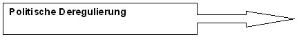
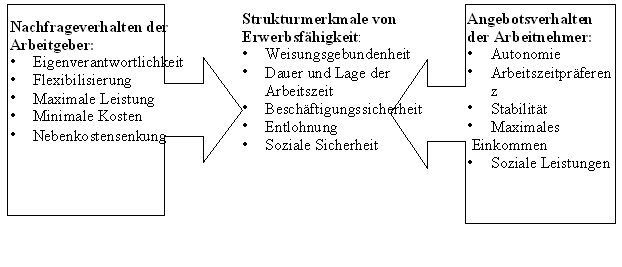
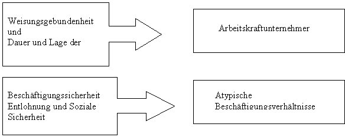

Die Zukunft
der Erwerbsarbeit:
Das Normalarbeitsverhältnis
Gruppe NAV:
1.
Einleitung und methodischer Rahmen
2.
Die Erosion des Normalarbeitsverhältnis – Indikator für die Transformation
der industriellen Moderne? (max eifler)
2.1
Der Begriff der Moderne und eine Einordnung in den Kontext der Gegenstandsuntersuchung
2.1.1
Eine analytische Eingrenzung des Modernebegriffs und methodische Hinführung
2.1.2
Modellvorstellungen
2.1.3
Drei Axiome der neueren Modernisierungstheorie
2.1.4
Der Diskurs der Befreiung und der Diskurs der Disziplinierung als zwei
Seiten einer Medaille
2.2
Die dunkle Seite der Moderne: Disziplinierung, Kontinuitäten des Ancien
Regime und der freie Markt
2.2.1
Der selbstgesteuerte Markt
2.2.2
Wirtschaftliche Tätigkeit und Sinnbezug
2.2.3
Flexibler Kapitalismus und Prekarisierung
2.2.3.1
Flexibilität: Prekarisierung im Informationssektor
2.3
Abschließende Betrachtung und Überprüfung der Hypothese
3.
Erosion des Normalarbeitsverhältnisses – Ursachen und Bestimmungsfaktoren
(christina meyer)
3.1
Wie zeigt sich nun dieser Systemwandel der Erwerbsarbeit?
3.2
Welche Bestimmungsfaktoren sind denn nun ursächlich für diesen
Wandel in den Beschäftigungsformen bzw. für die Erosion des
Normalarbeitsverhältnisses?
3.2.1
Bestimmungsfaktoren für die Erosion des Normalarbeitsverhältnisses
3.3
Wie wirken sich nun diese Faktoren explizit auf die Erosion des Normalarbeitsverhältnisses
aus bzw. welche Folgen ergeben sich
für den Arbeitsmarkt und die Erwerbstätigen?
4.
Kennzahlen derzeitiger Beschäftigungsverhältnisse (sibylle
langer)
4.1
Überblick zur Entwicklung unterschiedlicher Beschäftigungsverhältnisse
4.2
Die Bedeutung der Abnahme des Normalarbeitsverhältnisses für
den Einzelnen
4.2.1
Die Art des Arbeitsvertrages
4.2.2
Der Umfang der ausgeübten Tätigkeit
4.3
Fazit
5.
Welche Bedeutung hat die Erosion des NAV für die Gruppe der Frauen?
(kim hartmann)
5.1
Der Arbeitskraftunternehmer
5.2
Lage der Frauen am Arbeitsmarkt
5.2.1
Frauen und Qualifikation
5.2.2
Frauen und Position
5.3
Szenarien
5.3.1
Atypische Beschäftigungsverhältnisse
5.3.2
Szenarien
5.4
Abschließendes Fazit
6.
Erosion des NAV – Bedeutung für die Gewerkschaften (dagmar
brenner)
6.1
Warum betrifft die Erosion des NAV die Gewerkschaften?
6.1.1
Kennzeichen der industriegesellschaftlichen Arbeitswelt, auf die sich die
Gewerkschaftspolitik bezieht
6.2
Gewerkschaftspolitik – aktuelle Anzeichen der Krise
6.2.1
Mitgliedsverlust der Gewerkschaften
6.2.2
Krise des Flächentarifvertrages
6.3
Auf dem Weg in die Wissensgesellschaft – Zukunft für die Gewerkschaften?
6.3.1
Gewerkschaftspolitisch relevante Kennzeichen des Strukturwandels
6.3.2.
Ein neuer Arbeitnehmertypus bildet sich heraus
6.4
Herausforderungen und Chancen für die Gewerkschaften
6.4.1
Aktuelle Reformtrends in der Gewerkschaftspolitik
6.4.2
Ein neues Selbstverständnis
7.
Chancen und Risiken – Trends und Ausblicke (eva-maria
schlüter)
7.1
Chancen und Risiken bzw. Auswirkungen der Erosion des Normalarbeitsverhältnisses
7.2
(Schein-)Selbständigkeit
7.2.1
Selbständige Arbeit
7.2.2
Nutzen und Kosten der Selbständigkeit
7.3
Die fragmentierte Erwerbsbiographie als Chance
7.3.1
Innerbetriebliches Vertrauen als Verbreitungsgrenze atypischer Beschäftigungsformen
7.4
Weiterentwicklung des Sozialstaates
7.4.1
Normalarbeitsverhältnis und Sozialversicherung – eine überholte
Verbindung?
7.5
Szenarien künftiger Erwerbsarbeit
7.5.1
Die Arbeitswelt der Zukunft: Eckpunkte und Trends
8.
Zusammenfassung und Ausblick
9.
Literaturverzeichnis
10.
Verzeichnis der Tabellen, Abbildungen und Modelle S. 88
1. Einleitung und methodischer Rahmen
Das Projektseminar zur Frage der Zukunft der Erwerbsarbeit fand im Wintersemester 1999/2000 und im Sommersemester 2000 an der Universität Stuttgart, Institut für Sozialwissenschaften - Abteilung III: Arbeit und Organisation unter der Leitung von Herrn Dr. Gerhard Krauss statt. Diese Arbeit stellt im folgenden eine Untersuchung der Erosion des Normalarbeitsverhältnisses (NAV) im Zusammenhang mit der Gesamtthematik des Projektseminars dar.
Zur Verständnisklärung
führen wir zuerst einige Definitionen des Normalarbeitsverhältnisses
an, die alle substanziell mit folgenden Kernindikatoren beschrieben, und
als Grundlage für die folgenden Untersuchungen dieser Arbeit auf Makro-
Meso und Mikroebene betrachtet werden :
Nach Rainer Dombois ist das Normalarbeitsverhältnis dadurch gekennzeichnet, dass die „Abhängige Erwerbsarbeit die einzige Einkommens- und Versorgungsquelle [ist]. Sie wird in Vollzeit verrichtet und verschafft mindestens ein existenzsicherndes Einkommen. Das Arbeitsverhältnis ist unbefristet, im Prinzip auf Dauer angelegt und in ein engmaschiges Netz von rechtlichen und tariflichen Normen eingewoben, die Vertragsbedingungen und soziale Sicherungen regeln. Auch die zeitliche Organisation der Arbeit – Länge und Lage der Arbeitszeit – wird standardisiert.“ (Dombois: 1999)
Nach Ulrich
Walwei kann unter dem Normalarbeitsverhältnis folgendes verstanden
werden:
"Das Normalarbeitsverhältnis
basiert auf einem auf Dauer angelegten Arbeitsvertrag, einem festen, an
Vollzeitbeschäftigung orientierten Arbeitszeitmuster, einem tarifvertraglich
normierten Lohn oder Gehalt, der Sozialversicherungspflicht sowie der persönlichen
Abhängigkeit und Weisungsgebundenheit des Arbeitnehmers vom Arbeitgeber."
(Walwei: 1999)
Und ferner umfasst das Normalarbeitsverhältnis nach Edeltraud Hoffmann und Ulrich Walwei folgende Indikatoren:
In diesem Teil der Arbeit soll eine theoretische und deskriptive Analyse der Veränderungen gesellschaftlicher Rahmenbedingungen auf modernisierungstheoretischer Basis sowie deren Auswirkungen auf die Gestaltung von Arbeitsbeziehungen in Form der Normalarbeitsverhältnisse stattfinden. (Exemplarische Beispiele zu den Auswirkungen auf Makro-, Meso- und Mikro-Ebene werden in den späteren Abschnitten der Gesamtuntersuchung z.B. durch die Betrachtung der Veränderungen auf betrieblicher und gewerkschaftlicher Ebene, den Chancen und Risiken für Frauen etc. dargestellt.)
Anhand folgender These soll nun hier die Problematik dargestellt werden:
Wenn eine Transformation des tayloristisch-fordistischen Produktionstyps mit dem Normalarbeitsverhältnis als ihrem quintessenzähnlichen Prototyp der Arbeitsbeziehungen hin zu einem wissensbasierten Produktionstyp stattfindet, dann befinden sich durch die Erosion der grundlegenden Säulen der industriellen Arbeitskultur - die feste Arbeitszeit, der feste Arbeitsort und der umfassende Arbeitsvertrag - nicht nur die Formen der Arbeitsbeziehungen in einem Veränderungsprozeß, sondern die Moderne selbst befindet sich in einem epochalen Wandel bzw. in einem epochalen Paradigmenwechsel.
2.1.1 Eine
analytische Eingrenzung des Modernebegriffs und methodische Hinführung
Der Begriff der Moderne bzw. der Modernisierungsdiskurs ist eines der wenigen Sujets, das sowohl als sozialwissenschaftliche Kategorie wie auch als politische Formel eine lang anhaltende Konjunktur erfährt. Obwohl in den 80er Jahren kritische Stimmen aus dem Zweifel am technologischen und ökonomischen Fortschrittsoptimismus (besonders an der Formel einer linear steigenden Rationalisierung) zu vernehmen waren, setzte mit dem Zusammenbruch des Warschauer Pakts ein erneuter Schub der Moderne- und Modernisierungsdiskussion ein. Modernisierungstheorien gehören in jenen Bereich zunächst geschichtsphilosophischer, dann verstärkt soziologischer Theorien über gesellschaftliche Entwicklung, so daß sie kontextual auch für die Untersuchung der Erosion des Normalarbeitsverhältnisses geeignet erscheinen.
Die Gesamtproblematik die sich mit dem Modernediskurs verbindet, kann an diesem Ort nicht wiedergegeben werden. Im Folgenden beschränken wir uns auf neuere modernisierungstheoretische Argumente in Abgrenzung zu Talcott Parsons' - oft dem Vorwurf der Westernization ausgesetzten - strukturfunktionalistischen Ansatz, der eine vergleichende Wertung von Systemperformanz der Staaten auf der Prämisse des Zentrum/Peripherie - Dualismus vornimmt. (Geißler:1996, 358) Wir beleuchten die wichtigsten Aussagen der reflexiven Modernisierungstheorie (Beck, Giddens, Lash) um über eine Kritik des implizierten ökonomischen Teilsystems von Gesellschaft - als Ausdruck modernebedingter funktionaler Differenzierung - auf die Defizite der sich daraus ergebenden Flexibilitätsanforderungen an den neuen Produktivkrafttyp aufmerksam zu machen. Funktionalstrukturalistisch ersetzt der neue, flexible Akteur durch Inklusionsdefizite, die aus mangelnder Anschlußkommunikation aus dem funktional differenzierten Teilsystem der Arbeitsbeziehung innerhalb des ökonomischen Teilsystems entstehen, zunehmend den abhängig Beschäftigen im Normalarbeitsverhältnis.
Einen guten Überblick der gesellschaftlichen Übergangsentwicklungen verschafft uns Daniel Bell:
Tabelle 1:
| Vorindustrielle
Gesellschaft |
Industrielle
Gesellschaft |
Nachindustrielle
Gesellschaft |
|
| Ressourcen | Rohstoffe | Energie | Information |
| Produktionsweise | extraktive
Produktion |
Güterproduktion | verarbeitende
Produktion |
| Technologie | arbeitsintensiv | kapitalintensiv | wissensintensiv |
| Design | Spiel gegen die Natur | Spiel gegen die technisierte Natur | Spiel zwischen Personen |
2.1.2 Modellvorstellungen
Die einfache, industrielle, erste oder organisierte Moderne (Beck: 1996, Schäfers:1998, Wagner:1995) setzte mit der Aufklärung bestimmte Lebensformen und systembezogene zweckrational geleitete Prinzipien der Organisation und des Handelns durch, die sich auf die Idee der Freiheit und Autonomie für das Individuum stützen. Bestimmend für die weitere Beschreibung ist hier somit die Individualisierungsthese. In dem Buch Risikogesellschaft - auf dem Weg in eine andere Moderne schätzt der thematisch äußerst publikationsfreudige Soziologe Ulrich Beck den Wandel (der mit der Aufklärung begann) als einen Freisetzungsprozeß der Menschen von ihren industriegesellschaftlich geprägten Sozialmustern hin zu einer individualisierten Gesellschaft ein, welcher sich aber innerhalb der Moderne vollzieht, und von dem wir momentan alle Zeuge werden. Zur Unterlegung dieser Annahme führt Beck sieben Thesen an, von denen uns im Kontext der Betrachtung der Erosion des Normalarbeitsverhältnisses als Indikator für die Transformationsprozesse der Moderne im Zusammenhang mit der Individualisierungsthese nur die entsprechenden Hauptaussagen interessieren sollen:
Industrielle
Moderne
der industriellen Moderne: Auseinandersetzung zwischen stabilen Interessengruppen |
Bruch
durch Aufhebung
der Grundlagen der ersten Moderne aufgrund der Durchsetzung ihrer Grundprinzipien Grundprinzipen (nach W. Zapf)
und Wohlfahrtsstaat) |
Zweite
Moderne
sozialer Ungleichheit themenzentrierte, an massenmedialer Öffentlichkeit orientierte vagabundierende Konfliktbereitschaft |
2.1.3
Drei Axiome der neueren Modernisierungstheorie
Ulrich Beck benennt drei Axiome einfacher Modernisierungstheorien, über die nach seiner Aussage in der allgemeinen soziologischen Diskussion Konsens besteht (Beck: 1996, S.40ff):
Für das
3. Axiom ist ein Rekurs zu Niklas Luhmann notwendig: Der neue, aus dauerhaften
Erosionserscheinungen entwickelte industrielle Ordnungszusammenhang ist
äußerst problematischer (prekärer) Natur. Er entsteht aufgrund
der zum Selbsterhalt des Gesamtsystem notwendigen Ausdifferenzierung neuer
Funktionssysteme, die den dadurch als Ergebnis entstandenen Ordnungszusammenhang
zweiter Ordnung wiederum von Stratifikationsbewältigungen erster Ordnung
unabhängig macht. Die Bedingungen der Transformation lassen sich immer
an den Strukturproblemen der realisierten Differenzierungsform identifizieren.
Die funktionale Differenzierung von Subsystemen deren Kommunikationsmedien
aus einer neuartigen Kombination von Spezifikation und Universalismus bestehen,
ermöglichen sodann aus der äußeren Geschlossenheit der
Subsysteme (des Politischen, des Wirtschaftlichen, des Wissenschaftlichen,
der Kultur usw.) selbstreferentiell und autopoetisch gemäß ihrer
binären Codes den Erhalt bzw. die Möglichkeit der kommunikativen
Aufrechterhaltung der Umstellung vom Primat der Stratifikation ("an eigenen
anderen Rollen orientiert"; Luhmann:1998, S.739) auf das Primat der funktionellen
Differenzierung. ("auf die Komplementärrollen anderer abstellenden";
Luhmann:1998, 739) (siehe Gesamt: Luhmann:1998, 707 - 739)
Um mit den Worten Ulrich Becks weiterzusprechen, soll die Vorwegnahme der gegenwärtigen Situation am Beispiel eines Softwareentwicklers nicht vortäuschen, daß mit der einhergehenden Reflexivitätsnotwendigkeit über die Grundlagen der Moderne die (industrielle) Moderne auch automatisch komplett in Frage gestellt werden muß. (So wird niemand die Notwendigkeit der Produktion von Lebensmitteln oder die Unverzichtbarkeit reproduktiver Berufe wie dem des Arztes etc. in Frage stellen.) Daher wäre es auch unsinnig, aufgrund der Erosion des Normalarbeitsverhältnisses generell vom Ende der Arbeitsgesellschaft zu sprechen:
2.1.4 Der Diskurs der Befreiung und der Diskurs der Disziplinierung als zwei Seiten einer Medaille
In Abschnitt 2.1.2 wurde auf die Durchsetzung bestimmter Lebensformen und Möglichkeiten des Alltagshandeln, gestützt auf die Prinzipien der Autonomie und die Idee der Freiheit für das Individuum eingegangen. Verbunden mit dem Beck'schen ersten Axiom von der Beobachtbarkeit und soziologischen Darstellungsmöglichkeit sozialer Positionen, Klassen und Schichten ergibt sich im Umkehrschluß auch die Frage nach sozialer Ungleichheit und der daraus resultierenden Disziplinierung. Mit dem 'verschwinden individueller Barrieren' entstehen eingebunden in das Problem der sozialen Integration verteilungsspezifische Inklusions- bzw. Exklusionskrisen. (siehe Schimank:1998, 80)
Peter Wagner argumentiert in seinem Buch Soziologie der Moderne dahingehend, daß sich der Befreiungsdiskurs - als Ausdruck des revolutionären Initial - historisch zur Ausgangssituation der Moderne zurückverfolgen läßt: In der wissenschaftlichen Revolution ist der Diskurs verbunden mit der Forderung nach Lösung von den Abhängigkeiten für das Streben nach Wissen; in den politischen Revolutionen (Frankreich und Amerika) besteht die Verbindung in der Forderung nach Selbstbestimmung, und auf ökonomischer Basis stellt der Diskurs die Forderung nach wirtschaftlicher Betätigung ohne Beaufsichtigung und Regulierung durch die absolutistischen Staaten dar. Freiheit wurde dabei als universelles und unveräußerliches Recht gesehen. Im Befreiungsdiskurs wurde Freiheit aber auch immer konkret mit der Erreichung der angestrebten Ziele verbunden. In der Verknüpfung der Chance zur Begründung kollektiver Rechte mit der Ausübung individueller Freiheiten besteht das bedeutende Moment in und für die Selbstinterpretation moderner Gesellschaften. Dieser Freiheitsbegriff darf nun aber nicht mit dem individualistischen Freiheitsbegriff des 20. Jahrhunderts verwechselt werden. Die Ausgangslage im 19. Jahrhundert war auch eine ganz andere. Ob man der Ideologiekritik von Karl Marx zustimmen möchte oder nicht, so muß dennoch konstatiert werden, daß Marx versuchte die Abläufe der Ökonomie von ihrer angeblichen Universalität und Wissenschaftlichkeit, wie sie von der aufsteigenden Bourgeoisie dargestellt wurden, zu entschleiern. Mit der möglichen Bestimmung des gesellschaftlichen (also sozialen) Ortes des Subjektes der Ökonomie - den Produktivkräften - geht auch die Forderung nach dessen Befreiung, ganz im Sinne des Freiheitskontext der Aufklärung und des Ausgangsorts der Moderne einher. Die Gesellschaften des 19. Jahrhunderts befanden sich de facto in einem krassen Widerspruch zur "(...) universalistischen Rhetorik einerseits und ausgeprägten Barrieren zwischen den sozialen Gruppen im Hinblick auf die Verfügbarkeit der Freiheit andererseits." (Wagner:1995, 27) Um zuletzt auf den Diskurs der Disziplinierung zu rekurrieren, soll der für das Verständnis der Moderne zentrale gesellschaftliche Zustand der Unfreiheit der Masse zu eigenem wirtschaftlichen Handeln, der Errichtung einer eigenen politischen Ordnung sowie des Strebens nach wissenschaftlicher Erkenntnis mit dem Idiom der "Eindämmung der liberalen Utopie" (Wagner: 1995, 27) beschrieben werden.
Für das Verständnis von Freiheit (und annähernd von Moderne) des 20. Jahrhunderts erscheint die Eindämmung der liberalen Utopie nunmehr aufgehoben zu sein. Durch die funktionale Differenzierung der leistungsfähigen Teilsysteme wurden perspektivisch die individuellen Barrieren eingerissen: die formalen Exklusionsregeln schienen aufgehoben zu sein, und soziale Mobilität ist nun eindeutig möglich. Mit der Wandlung der individuellen Chancen wandelte sich auch der Befreiungsdiskurs. Alleine - wie Wagner sagt - die Funktionalität der sozialen Arrangements in modernen Gesellschaften wurde nunmehr als befreiend angesehen worden. Obwohl sich dadurch auch neue Anpassungsanforderungen ergaben, (z.B. durch veränderte dynamische Rollenerwartungen die an die Individuen aufgrund der Auflösung traditioneller Muster heran getragen wurden), erzielte die Funktionalität der sozialen Arrangements in der Kosten-Nutzen Analyse der fünfziger und sechziger Jahre immer positive Bilanzen.
2.2 Die
dunkle Seite der Moderne: Disziplinierung, Kontinuitäten des Ancient
Regime und der freie Markt
Die Überzeugungskraft des Bildes einer funktional geordneten Gesellschaft hat seit den letzten zwei Jahrzehnten an Überzeugungskraft verloren. Desintegration und Pluralisierung institutioneller Arrangements, die schleichende Erosion kollektiver sozialer Sicherungssysteme und der Normalarbeitsverhältnisse als Quintessenz der standardisierten und massentauglichen Produktionsweise sowie ein diverser gesellschaftlicher Entsolidarisierungseffekt geht mit der Forderung nach höherer Leistungsfähigkeit und Flexibilität der Individuen auf Kosten von Verantwortungsbewußtsein für die sozioökonomischen Aggregate einher. Differenzierungstheoretisch kann dies als Effekt des "fortwährenden Spannungsverhältnis zwischen funktionaler Differenzierung und den Erfordernissen gesellschaftlicher Systemintegration als zentrales Charakteristikum der modernen Gesellschaft" (Schimank: 1998, 63) verstanden werden. Als Ausgangspunkt für die Nichteinlösung des Postulats der allgemeinen Befreiung - um erneut mit Wagner zu sprechen - ist wiederum im Grundsatz die Eindämmung der liberalen Utopie benennbar. In den Jahren zwischen 1750 und 1850 wurde auch von den Aufklärern am Staat - trotz seiner absolutistischen und feudalen Herkunft - als Behältnis für den Schutz und die Grenze der Moderne festgehalten. Diese Selbstdisziplinierung der Moderne nahm zu einem späteren Zeitpunkt mit den Weltkriegen und den faschistischen Regimen dramatische Dimensionen an. Zuvor hatte Karl Marx aber bereits mit der Beschreibung der Entfremdung und Fetischisierung von der Arbeit (Marx: 1970, 82-96) als Ergebnis marktlicher Interaktion auf das Problem der Nichteinlösung des Emanzipationspostulats der Moderne in ihrem Charakter hingewiesen. "In analoger Weise argumentiert Weber, daß die Errungenschaften bürokratischer und marktlicher Rationalitäten das 'Lebensschicksal' der Menschen verändern und menschliches Leben wichtiger Eigenschaften berauben." (Wagner:1995, 29)
Die liberale
Utopie stellt in diesem Zusammenhang aber nicht das Mittel zur Lösung
des uneingelösten Freiheitspostulats dar. Wie Karl Polanyi in The
Great Transformation feststellt, hat die Philosophie des Liberalismus
nirgends so versagt wie in der Einlösung ihres Anspruchs auf Verbesserung
zum Wohl der Allgemeinheit. Im Gegenteil spricht er vom emotionellen Vertrauen
des Liberalismus auf die Spontaneität, wodurch die "vernunftbestimmte
Einstellung zur Veränderung zugunsten einer mystischen Bereitschaft"
aufgegeben wurde, die die "sozialen Folgen eines wirtschaftlichen Fortschritts
(...) akzeptiert, wie immer sie auch geartet sein mochten." (Polanyi: 1997,
59)
2.2.1 Der selbstgesteuerte Markt
Karl Polanyi verweist in The Great Transformation auf einige der Heute als unumstößlich geltenden normativen Wahrheiten der liberalen Klassiker, die er an den Ort ihrer eigentlichen Aufenthaltsbestimmung verweist: In die heile Welt der Metaphysik.
Ein System von Märkten, das selbstregulierend, d.h. ohne Hilfe sowie äußere Einmischung handelt und nur von Marktpreisen gesteuert wird, bildet die Marktwirtschaft. Die notwendige Existenz einer Volkswirtschaft wird von Polanyi überhaupt nicht in Frage gestellt. Dennoch ist es in der Geschichte der Menschheit eines der einzigartigen Unterfangen, eine Wirtschaftsform zu entwerfen, die ausschließlich durch den Markt gelenkt wird. Gerade im 19. Jahrhundert wurde dieses Konstrukt beschwörend als eine der natürlichsten Entwicklungen der Welt dargestellt, obwohl die Erzielung von Gewinn und Profit nicht zu den kulturevolutionären Interessen des Homo Sapiens gehört, und obwohl seit der späten Steinzeit die Einrichtung des Marktes eher eine sekundäre Rolle im Leben der Menschen spielte. (Polanyi:1997, 71) Polanyi führt im Anhang von The Great Transformation dazu folgendes aus:
2.2.2 Wirtschaftliche Tätigkeit und Sinnbezug
Um den Spannungsbogen zur Erosion der Normalarbeitsverhältnisse klärend aufzubauen, wollen wir noch kurz bei Karl Polanyi verweilen. Denn aus dem 19. Jahrhundert sind noch weitere Vorurteile und Mißverständnisse über das Wesen der Ökonomie durch die liberale Sichtweise übernommen worden die kritisch zu hinterfragen sind. Da Adam Smiths Hypothese vom gewinnstrebenden Wilden falsifiziert und eher auf die nähere Zukunft anwendbar erschien, führte dies bei weiteren liberalen Ökonomen zu der Meinung, daß sich die frühzeitlichen Menschen näher an einem Stadium des Kommunismus befunden hätten, als in einem Prozeß der Genese des kapitalistischen Geistes. Das führte selbstverständlich zur Desavouierung jeglicher Beschäftigung mit vorgeschichtlichen Wirtschaftsformen, und zur Fixierung auf nähere Epochen in denen es (eben) vermehrt zu Tauschhandel kam. Diese Ignoranz gegenüber frühgeschichtlichen Entwicklungsphasen menschlicher Gesellschaften hätte nach Polanyi durch eine Verbindung der Wirtschaftswissenschaften mit der Sozialanthropologie korrigiert werden können. Die letzten zehntausend Jahre lediglich als Vorspiel der wahren Geschichte menschlicher Zivilisation bis zum Erscheinen von Adam Smith's Wealth of Nations, 1776 zu verstehen, wird von Polanyi erheblich kritisiert. Er erhebt den Vorwurf, daß mit "derart subjektivistische[n] Einstellunge[n] zu früheren Zivilisationen" (Polanyi:1997, 74) eine Denkart eingeschlagen wurde, die der Wissenschaft eigentlich zutiefst fremd sein sollte. Historiker verweisen darauf, daß die Gewerbeformen des agrargeprägten Europa im Rahmen der Zeitspanne der Menschheitsgeschichte eigentlich - um es zu verbildlichen - erst seit ein paar Minuten zu der jetzigen selbststeuernden Marktform wechselten. Fortschritt in zivilisatorischer Hinsicht ist in Europa vor allem auf geistiger, politischer und intellektueller Ebene, in der Literatur, der Staats- und bildenden Kunst erzielt worden. Der Pflug aber behielt für lange Zeit seine primitive Form. Das mittelalterliche Europa stand in keinem Vergleich zu dem vor zweitausend Jahren existierenden Reich in Ägypten, und befand sich eher auf der Höhe des alten Persiens oder China. Es war z.B. auch Max Weber, "der unter den modernen Wirtschaftshistorikern (...) dagegen protestierte, daß man die primitiven Wirtschaftsformen als für die Frage der Motive und Mechanismen der zivilisierten Gesellschaften unerheblich abtat." (Polanyi:1997, 74) Die Ergebnisse aus der Sozialanthropologie besagten, daß aus der Untersuchung der frühen Gesellschaften das Unveränderliche des Menschen als soziales Wesen hervorgeht. Die sozialen Dispositionen des Menschen manifestieren sich regelmäßig und unverändert in ihrer Funktion zur Sicherung des Überlebens seiner Spezies. Daraus läßt sich nach Polanyi deduzieren, daß
Wie im 3. Axiom zur Beschreibung der Moderne aus Ulrich Becks Buch Reflexive Modernisierung in Abschnitt 2.2 dargestellt wurde, entwickeln sich mit der Emergenz neuer Strukturen, Organisationen, Funktionen und Aufgaben, die die Komplexität reduzieren auch neue Fachdisziplinen, neue Karrieren, neue Rechtsbereiche usw.. Aufgrund empirischer Untersuchungen gehen wir von einer langsamen aber stetigen Erosion des noch vorherrschenden Typs der Erwerbsarbeit aus. Mit den tayloristisch durchorganisierten Großbetrieben war, und ist diese Form der Erwerbsarbeit mit dem Bild des Normalarbeitsverhältnisses verbunden. Das Normalarbeitsverhältnis als bisher vorherrschende Arbeitsbeziehung ist aber gekennzeichnet durch den kapitalistischen Produktionstyp. Die Crux besteht darin, daß im Kapitalismus prinzipiell keine garantierten Beschäftigungsverhältnisse existieren, sondern lediglich eine Garantie auf ein Abhängigkeitsverhältnis: dem der Lohnabhängigkeit. In der New Economy wird aufgrund der großen Dynamik der Kapitalakkumulation, rasch wechselnder Arbeitsverhältnisse und der Virtualität der Produktionsmittel aber auch die Garantie auf dieses Abhängigkeitsverhältnis gefährdet. Der Begriff des Normalarbeitsverhältnisses drückt in Zukunft daher keine Norm kapitalistischer Produktion und Reproduktion im allgemeinen, sondern ein historisches Verhältnis aus, welches heute noch als fordistischer Kompromiß bezeichnet werden kann.
Der tariflich
und rechtlich abgesicherte 8-Stunden Arbeitstag war in der Geschichte der
Arbeitsbeziehungen schon immer aber nur für eine gewisse Periode und
nur für einen bestimmten Teil der abhängig Beschäftigten
die Realität. Regulär trifft das Normalarbeitsverhältnis
auf männliche Facharbeiter aus jenen Branchen zu, in denen
eine Kontinuität im Beschäftigungsprozeß durch tarifliche
Absicherung organisiert werden konnte. Erschien es der Kapitalseite profitabler,
z.B. aufgrund von Verwertungsausfallzeiten die Arbeitsverhältnisse
zu prekarisieren - so geschah dies auch prompt. (Wie z.B. im Baugewerbe
und der landwirtschaftlichen Produktion.) Als fortgeschrittene Tendenz
ist somit die Prekarisierung der Normalarbeitsverhältnisse Ausdruck
dessen, was als historische Neudefinition von jener Norm zu verstehen ist,
die sich nicht in Sonderarbeitsverhältnissen ausdrückt,
sondern als Norm für das, was als kommendes reguläres Arbeitsverhältnis
zu prognostizieren ist. Mit Prekarisierung wird in der Diskussion üblicherweise
die Veränderungen der Arbeitsbeziehungen bezeichnet, welche die Reproduktionsbedingungen
von abhängig Beschäftigen für abhängig Beschäftigte
äußerst schwierig machen. (Gruppe Blauer Montag: 1998, 23) Die
Veränderungen der Arbeitsbeziehungen in Richtung Prekarisierung lassen
sich mit folgenden Indikatoren beschreiben:
Die oben angeführten "harten Indikatoren" sind auf den klassischen industriellen Sektor zugeschnitten. Der klassische industrielle Sektor befindet sich aber durch die Transformationsprozesse der Moderne in den Ländern der nördlichen Erdkugel in Folge eines voranschreitenden digitalen Kapitalismus in einem Erosionszustand. Um auf die Darstellung der Stadien gesellschaftlicher Übergangsentwicklungen von Daniel Bell aus Abschnitt 2.1 zurückzugreifen, läßt sich modernisierungstheoretisch das Entstehen einer neuen Formation im Sinne einer industrialisierten Dienstleistungsgesellschaft auf wissenstechnischer Basis und somit ein sektoraler Wandel konstatieren.
Die Beschäftigten des Informations- und Wissenssektors werden nach Richard Sennett von der Prekarisierung der Arbeitsbeziehungen nicht ausgeschlossen: sie findet angepasst an den neuen Produktivkrafttyp statt. Die Flexibilitätsanforderungen sollen nun als Ursache für die Prekarisierung in der weiteren Betrachtung im Vordergrund stehen. Mit Flexibilität ist hierbei die notwendige Offenheit für kurzfristige Veränderung, der Umgang mit risikobehafteten Beschäftigungsverhältnissen sowie die Entkopplung von etablierten Prozeduren und Problemlösungsstrategien gemeint. Gesundheitsschädliche Auswirkungen können sich z.B. in einem 'Burn-Out Syndrom' zeigen, aber auch in einer psychisch-emotionalen Belastung durch das Aufbrechen bisheriger traditioneller Beziehungsmuster bzw. der Reduzierung sozialer Interaktionschancen, die zu chronischen Pathologien führen. In Sennett's Buch Der flexible Mensch (Im Original lautet der Titel treffender: Corrosion of Character) geht es auch um die Aspekte der Flexibilität in ihrer Auswirkung auf den persönlichen Charakter der Angestellten. Charakter wird als ethischer Wert definiert, an dem Menschen im antizipatorischen Akt eigene Entscheidungen und die Interaktionsbeziehungen zu Alter messen. Sennett bezieht sich hierbei auf Horaz, der schrieb, daß "der Charakter des Menschen von seinen Verbindungen zur Welt abhängt." (Sennett: 1998, S.11) Der Charakter fokussiert auf die langfristigen Aspekte der kathektischen Erfahrungen, und ist durch Treue, aufeinanderbezogene Verpflichtungen oder langfristige Zielverfolgung gekennzeichnet. Aus den ständig einprasselnden Eindrücken werden jene ausgewählt, die für die Entwicklung von Problemlösungsstrategien notwendig sind. Eine langfristige Zielverfolgung erscheint aber in einer Lebenssituation die auf Kurzfristigkeit ausgerichtet ist (durch die Kurzfristigkeit der New Economy) nicht realisierbar. In ständig zerbrechenden und sich auflösenden ökonomischen Institutionen können weder Loyalitätsmuster noch Verantwortungsbewußtsein ausgebildet werden.
Funktionalstrukturalistisch argumentiert bedarf es einer für den Gesamterhalt des Systems erster Ordnung notwendigen Emergenz neuer funktionaler Requisiten (und Äquivalenten), um die durch sektorale Transformation entstandene neue Komplexität reduzieren zu können. Unmerklich ändert sich dabei auch das System erster Ordnung. Die Erosion des Normalarbeitsverhältnisses bzw. das Aufkommen, oder die Zunahme anderer Arbeitsverhältnisse (Flexibilisiert, auf Teilzeit orientiert, in Abhängigkeit permanenter Weiterqualifizierung, unterbrochen von Phasen der Arbeitslosigkeit etc.) stellt somit ein Re-entry (Baraldi, Corsi, Esposito:1997, 152f.) des autopoietischen Systems (die Fähigkeit, die Elemente aus denen das System besteht selbst zu produzieren und zu reproduzieren, um dadurch seine Einheit zu definieren) (Baraldi, Corsi, Esposito:1997, 29) dar, um auf der Grundlage der besonderen Unterscheidung eines Codes des ausdifferenzierten Teilsystems (wir sind bei der Betrachtung des 2. und 3. Axioms von Beck in Abschnitt 2.2.1 von einer soziologischen Übereinstimmung mit der Beschreibung dieses Sachverhalts ausgegangen) zu lernen, eine Unterscheidung der Binarität der Codes intern zu behandeln. Innerhalb des Teilsystems Wirtschaft, dessen Kommunikationsmedium Geld bzw. Eigentum mit dem Code Haben/Nicht-Haben ist, stellen die symbiotischen Symbole des Kommunikationsmedium die körperlichen Bedürfnisse des Menschen dar. In einer Geldwirtschaft wird der Begriff des Bedürfnisses generalisiert, und umfaßt erweitert alle Bereiche worauf sich Produktion beziehen kann, und die über der reinen Befriedigung des Überlebensbedürfnisses stehen. (Baraldi, Corsi, Esposito:1997, 40-42) Mit der Herausbildung neuer funktional differenzierter Teilsysteme die den Modernisierungsprozeß ausmachen, entstehen in der Form neuer Arbeitskrafttypen auch neue Anschlußmöglichkeiten in Form struktureller Kopplungen. Das System, welches durch die von der Moderne ausgelösten Prozesse weg vom stratifikatorisch differenzierten, hin zum komplexeren funktional differenzierten System emergierte, befindet sich über das Re-entry (also die Wiedereinführung einer Unterscheidung in einen Bereich, die es dem System erlaubt den Bereich an sich in Rekurs auf Zeit zu unterscheiden) in einer ständigen Weiterentwicklung. Beck spricht, wie wir in Model 1 gesehen haben, bei der Entstehung der reflexiven Moderne z.B. von einem Prozeß der Aufhebung der Grundlagen der ersten Moderne aufgrund der Durchsetzung ihrer Grundprinzipien; somit wird hier die Binarität ausgedrückt in der Form: Aufhebung/Durchsetzung. Die Systemtheorien neigen zwar gerne zu teleologischen Fehlschlüssen (Ziel und Zweck miteinander zu vertauschen), dennoch halten wir es für plausibel und logisch stringent zu behaupten, daß durch die Erosion des Normalarbeitsverhältnisses ein bestimmter Typ zur Befriedigung produktiver Notwendigkeiten, gekoppelt an einen bestimmten gesellschaftlichen Entwicklungsstand - den der industriellen Moderne - sich auch der gesellschaftliche Entwicklungsstand an sich weiter ausdifferenziert. Die abhängige Variable ist und bleibt die Form des Produktionstyps. Schreitet die Entwicklung der unabhängigen Variable 'industrialisierte Moderne' fort (siehe empirische Belege zur sektoralen Entwicklung), so muß sich auch entsprechend die abhängige Variable 'das Normalarbeitsverhältnis' ändern.
Wohin das führt
(besser: führen kann) werden wir in den folgenden Abschnitten aufzeigen.
3.1 Wie zeigt sich nun dieser Systemwandel der Erwerbsarbeit?
Der Wandel
des Beschäftigungssystems in drei Dimensionen:
| Kennzeichen
des Beschäftigungssystems vor dem Wandel:
Arbeitsvertrag
Arbeitsort
Arbeitszeit
|
Kennzeichen
des Beschäftigungssystems nach dem Wandel:
Arbeitsvertrag
Arbeitsort
Arbeitszeit
|
3.2 Welche Bestimmungsfaktoren sind denn nun ursächlich für diesen Wandel in den Beschäftigungsformen bzw. für die Erosion des Normalarbeitsverhältnisses?
Als Erklärung
für den sich empirisch abzeichnenden Wandel der Beschäftigungsformen
kommen eine ganze Reihe von Einflussfaktoren in Betracht (Walwei:1998,
3).
Für eine
vollständige Erklärung ist es aber notwendig, dass unter anderem
auch der ökonomische Strukturwandel, politische Deregulierungen, das
traditionelle System der Kollektivvereinbarungen, Veränderungen am
Arbeitsmarkt, veränderte gesellschaftliche Ansprüche an die Erwerbsarbeit
und einige weitere Faktoren, die im Folgenden näher beschrieben werden,
mit einbezogen werden müssen (Dombois:1999, 15). Diese Faktoren werden
auch als Bestimmungsfaktoren für die Erosion des Normalarbeitsverhältnisses
bezeichnet.
Die Identifikation
dieser Bestimmungsfaktoren dient aber nicht nur der Analyse der Vergangenheitsentwicklung,
sondern liefert auch Hinweise darauf, wie es mit den Beschäftigungsformen
in Zukunft weitergehen soll (Walwei:1998, 3).
3.2.1
Bestimmungsfaktoren für die Erosion des Normalarbeitsverhältnisses
3.3 Wie
wirken sich nun diese Faktoren explizit auf die Erosion des Normalarbeitsverhältnisses
aus bzw. welche Folgen ergeben sich für den Arbeitsmarkt und
die Erwerbstätigen?
Eine
Erläuterung der Faktoren:

In den achtziger
Jahren wurden im Rahmen der Diskussionen um den Standort Deutschland Maßnahmen
der rechtlichen Deregulierung von der konservativ-liberalen Koalition durchgesetzt.
Diese Regulierungsmaßnahmen betrafen vor allem: die Ausweitung der
rechtlichen Spielräume für Leiharbeit und für befristete
Arbeitsverträge, die Einschränkung des Kündigungsschutzes
und der Lohnfortzahlung im Krankheitsfall, die Verminderung von Transferzahlungen
an Arbeitslose und Verschärfung der Anspruchsvoraussetzungen (Dombois:1999,
16).
Diese Maßnahmen
können sowohl von Arbeitgeber-Seite, als auch von Arbeitnehmer-Seite
genutzt werden, um das Normalarbeitsverhältnis aufzubrechen und sie
können auch die Basis bzw. die rechtliche Grundlage für neue
Wege und Formen der Erwerbsarbeit bieten.
Seit den siebziger Jahren haben sich die Wachstumsraten der Wirtschaft drastisch reduziert und sind weit hinter den Produktivitätssteigerungen zurückgeblieben. Außerdem ging das Arbeitsvolumen in den letzten 35 Jahren um 20% zurück, gleichzeitig hat sich aber im selben Zeitraum die Zahl der Erwerbspersonen um 10% erhöht.
Wie ist diese Zunahme der Erwerbspersonen zu erklären?
Zum einen ist es bedingt durch die steigende Anzahl von Frauen, die auf den Arbeitsmarkt drängen und zum anderen durch den Eintritt geburtenstarker Jahrgänge in das Arbeitsleben.
Durch den Anstieg
der Erwerbspersonen verteilt sich das Arbeitsvolumen auf eine größere
Zahl von Erwerbstätigen was zur Folge hat, dass neue Wege und Mittel
der Arbeitsformen gesucht werden müssen, um den immer größer
werdenden Bedarf an Arbeit zu decken. Das bedeutet, dass es mittlerweile
verschiedene Beschäftigungsformen gibt, die das Normalarbeitsverhältnis
substituieren.
Auf dem Arbeitsmarkt
spielt das befristete Arbeitsverhältnis eine immer größere
Rolle, denn mittlerweile hat man erkannt, dass sich dadurch viele Vorteile
erreichen lassen. Zum einen hält ein befristet Beschäftigter
im Gegensatz zu einem Arbeitslosen ständig Kontakt zum Erwerbsleben.
Außerdem kann diese Beschäftigungsform auch als Einstiegshilfe
für jüngere Einsteiger (nach der Ausbildung) und ältere
Wiedereinsteiger (nach Arbeitslosigkeit bzw. Erwerbsunterbrechung) gesehen
werden (Walwei:1998, 7).
Ähnliches
gilt für andere atypische Beschäftigungsformen wie z.B. Leiharbeit
oder Teilselbstständigkeit.
Durch die
Möglichkeit der befristeten Beschäftigung wird für viele
Menschen die Hürde von der Langzeitarbeitslosigkeit in das dauerhafte
Arbeitsverhältnis schrittweise verkleinert.
Eine zentrale
Bedeutung in der Problematik der Erosion des Normalarbeitsverhältnisses
hat auch der ökonomische Strukturwandel. Dieser Wandel wirkt sich
auf die verschiedenen Formen der Arbeit, Arbeitsorganisation und Erwerbstätigkeit
aus.
Der Hauptfaktor
ist dabei sicherlich die rapide „Tertiarisierung“. Das heißt der
Dienstleistungssektor und vor allem die Bereiche der unternehmensbezogenen
und sozialen Dienstleistungen haben enorm an Bedeutung gewonnen, was zur
Folge hat, dass die Beschäftigung im klassischen Industriesektor immer
mehr an Bedeutung verliert. Die direkte Produktionsarbeit nimmt ab und
viele Tätigkeiten sind mittlerweile eher den Dienstleistungen als
der materiellen Produktion zuzurechnen.
Der Ausbau
des Dienstleistungssektors führt also zu Veränderungen der Erwerbstätigkeit.
Auch der Organisationstyp, der das Normalarbeitsverhältnis stützte
– das große Unternehmen – , büßt an Bedeutung ein gegenüber
den kleinen und mittleren Unternehmen und/oder neuen, netzwerkförmigen
Zusammenhängen mit oft instabilen Marktbedingungen und flexiblen Organisationsformen
und Zeitregimes. (Dombois:1999, 17)
Auch die Lohnstückkosten
sind ein Einflussfaktor, die zu einem Wandel der Beschäftigungsform
bzw. zur Erosion des Normalarbeitsverhältnisses führen.
Die Arbeitskosten
je Stunde in Deutschland sind aus verschiedenen Gründen enorm angestiegen.
Das veranlasst Unternehmen mittlerweile dazu, ihre Nachfrage bezüglich
alternativer Beschäftigungsformen zu erhöhen. Ein Beispiel dafür
ist die permanente Erhöhung der Sozialversicherungsbeiträge.
Dieser Zustand hat zur Folge, dass Erwerbsformen, die nicht der Sozialversicherungspflicht
unterliegen, immer mehr an Attraktivität gewinnen oder es kommt zu
vermehrten Auslagerungen in Form von Werksverträgen an Selbständige.
Die Höhe
der Lohnstückkosten und die ständige Erhöhung der Sozialversicherungsbeiträge
zwingen somit Unternehmen, zum bisherigen Normalarbeitsverhältnis
alternative Beschäftigungsformen zu schaffen.
Wie für
die Unternehmen die Schaffung von Arbeitsplätzen abhängig sind
von Arbeitskosten oder benötigtem Arbeitsvolumen, so sind für
die Arbeitnehmer die Höhe der Arbeits- (Nettoeinkommen, Steuern) und
Transfereinkommen (insbesondere Sozialhilfe) maßgeblich für
die Wahl bestimmter Beschäftigungsformen.
Der ökonomische
Strukturwandel und die Veränderungen auf dem Arbeitsmarkt setzen eine
große Stütze des Normalarbeitsverhältnisses unter Druck:
das System der Kollektivvereinbarungen mit seinem Hauptteil, dem Flächentarifvertrag.
Seit den achtziger
Jahren verliert dieses System aufgrund des schwachen Wirtschaftswachstums
und steigender Arbeitslosigkeit immer mehr an Regulierungskraft.
Ein Verlust
an Regulierungskraft in sofern, dass Tarifverträge nicht mehr von
anderen Branchen übernommen und verallgemeinert werden, und dass die
Flächentarifverträge flexibler bzw. den differenzierten betrieblichen
Bedingungen angepasst werden. Es existieren auch schon Formen der „wilden“
Flexibilisierung, die einseitig von Unternehmen durchgesetzt oder ohne
Kenntnis der Gewerkschaft mit Betriebsräten vereinbart werden. (Dombois:1999,
17)
Dadurch gewinnt
die spezifische betriebliche Situation an Gewicht und das Regelungssystems,
das die Angleichung von Arbeits- und Vertragsbedingungen förderte,
verliert immer mehr an Bedeutung. Somit werden neue Räume für
Differenzierungen in der Beschäftigungsform geschaffen.
Der letzte
Bestimmungsfaktor für die Erosion des Normalarbeitsverhältnisses
sind die sozio-kulturellen Veränderungen der Gesellschaft.
Deutlich wird
dies vor allem im Bereich der Teilzeitbeschäftigung. 1997 waren immerhin
40% aller erwerbstätigen Frauen und 10% der Männer in Westdeutschland
teilzeitbeschäftigt. Der Trend zur Teilzeitbeschäftigung hängt
eng mit den Veränderungen des Erwerbsverhaltens und der Erwerbsorientierung
zusammen. Vor allem die wachsende Erwerbsbeteiligung der Frauen gewinnt
an Bedeutung, die sich erklären lässt aus dem stark gestiegenen
Bildungs- und Ausbildungsniveau, aus der Erosion des traditionellen Familienmodells
und der zunehmenden Verbreitung von Haushaltsformen, in denen die Berufstätigkeit
der Frau zur wichtigen oder einzigen Einkommensquelle der Familie wird.
(Dombois:1999, 18)
Teilzeitarbeit
schafft somit für viele Personen neue Spielräume bzw. eine Teilnahme
am Erwerbsleben, setzt aber auch gleichzeitig soziale Ungleichheits- und
Abhängigkeitsbeziehungen fort . Außerdem schafft Teilzeitarbeit
auch die Möglichkeit, Erwerbstätigkeit mit anderen Tätigkeiten
(z.B. Weiterbildung, Eigenarbeit, ehrenamtliche Tätigkeiten) zu verbinden.
Insgesamt
entspricht das traditionelle Normalarbeitsverhältnis immer weniger
den vielfältigen Notwendigkeiten, Bedürfnis- und Interessenlagen
in einer Gesellschaft, in der traditionelle kollektive Lebenszusammenhänge,
-stile und –rhythmen aufbrechen und sich differenzieren und mit ihnen Lebensplanung
und Erwerbsstrategien der Individuen (Dombois: 1999, 18).
Unter diesen
Aspekt fallen vor allem folgende Punkte:
- Outsourcingtendenzen
- Vereinbarung
flexibler Jahresarbeitszeitmodelle
- wachsende
Erwerbsorientierung
Outsorcingtendenz
Unternehmen
tendieren immer mehr dazu, Aufträge an Selbstständige bzw. Schein-Selbstständige
oder Verleihfirmen zu vergeben.
Diese Auftragsvergabe
trägt zu einem relativen Bedeutungsverlust des Normalarbeitsverhältnisses
bei.
Vereinbarung flexibler Jahresarbeitszeitmodelle
Von Bedeutung
für die Entwicklung von verschiedenen Beschäftigungsformen sind
auch die Vereinbarungen flexibler Arbeitszeitmodelle zwischen Arbeitnehmer
und Arbeitgeber. Dabei geht es vor allem um Arbeitszeitmodelle auf Voll-
und Teilzeitbasis. Das bedeutet, dass bei positiver Auftragslage des Unternehmens
längere Arbeitszeiten vereinbart werden und bei schlechter Auftragslage
dementsprechend kürzere Arbeitszeiten.
Das führt
zu einer Senkung des Bedarfs an Normalarbeitsverhältnissen und zur
Zunahme verschiedener individueller bzw. atypischer Beschäftigungsformen.
Wachsende Erwerbsorientierung
Bei diesem
Faktor spielt vor allem die zunehmende Erwerbsorientierung der Frauen (wie
auch schon bei Punkt b) Veränderungen am Arbeitsmarkt beschrieben)
eine Rolle. Außerdem ändern sich auch die Präferenzen der
Arbeitnehmer dahingehend, dass sie nicht mehr von vornherein auf eine bestimmte
Beschäftigungsform festgelegt sind, sondern je nach individueller
Lebenslage sich entscheiden.
Die Erwerbsbiographien
verlaufen nun nicht mehr gradlinig, sondern zeichnen sich durch unterschiedlichste
Erwerbsformen, die hinter- oder nebeneinander durchlaufen werden, aus.
4.1 Im folgenden soll anhand einer Reihe empirischer Daten ein Überblick über die Entwicklung unterschiedlicher Beschäftigungsverhältnisse in Deutschland über die letzten Jahre hinweg gegeben werden und daran exemplarisch die Problematik der unterschiedlichen Berechnungen für die weitere Forschung nochmals verdeutlicht werden.
Nach den auf
Basis des Mikrozensus basierenden Ergebnissen von Hoffmann und Walwei (Hoffmann/Walwei
1998: 4) ist der Anteil der in einem Normalarbeitsverhältnis stehenden
Erwerbstätigen in der Zeit von 1985 bis 1990 weitestgehend unverändert
bei 59% geblieben, während die Zahl der Erwerbstätigen insgesamt
um knapp 3 Mio. von 26,6 Mio. auf 29,3 Mio. anstieg. In den folgenden fünf
Jahren fiel dieser Anteil jedoch um über 3% auf 56,2% bei nur leichtem
Rückgang der Zahl aller Erwerbstätigen. Da der Anteil der Erwerbstätigen
in befristeter Vollzeitbeschäftigung und Leiharbeit in diesem Zeitraum
nahezu unverändert blieb, gehen sie davon aus, daß auch keine
Abwanderung der „Normalarbeits-Erwerbstätigen“ in diese Sparten stattfand.
Die Definition
von Normalarbeitsverhältnis auf der Hoffmann und Walwei ihre Untersuchung
aufbauen, beinhaltet Arbeiter und Angestellte ohne Auszubildende, Beamte,
Soldaten, Selbständige und Mithelfende, die in Vollzeitbeschäftigung
(also mit einer Wochenarbeitszeit von 36 Stunden und mehr) mit unbefristetem
Arbeitsvertrag angestellt sind und sich nicht in Arbeitnehmerüberlassung
befinden (Hoffmann/Walwei 1998: 4).
Eine Schwachstelle
ihrer Auswertungen liegt darin, daß aufgrund veränderter Leitfragen
ab 1996 die Ergebnisse nur noch eingeschränkt mit denen früherer
Jahre verglichen werden kann. So muss der dort ausgegebene Anteilsrückgang
der Normalarbeitsverhältnisse auf 52,1% aller Erwerbstätigen
als überzeichnet interpretiert werden.
Zu einem anderen Ergebnis auf Grundlage des Mikrozensus von 1997 kommen die Autoren eines Artikels der Zeitung „Die Welt“ vom 15.05.98. Ihrer Ansicht nach geht „der Trend [...] eindeutig weg von der lebenslangen Vollzeitstelle[, da] eine solche [...] nur noch 82 Prozent [haben], 1991 waren es noch 86 Prozent“ (http://www.welt.de/daten/1998/05/15/ 0515wi72991htx). Leider fehlt in ihrem Artikel die genaue Definition, auf die sich ihre Berechnungen beziehen, jedoch dürfte anhand der sich von Hoffmann/Walwei doch erheblich unterscheidenden Daten klar sein, dass hier eine völlig andere Definition zugrunde gelegt wird als bei oben genannten Autoren.
Einer Definition von Wolf Rosenbaum zufolge befinden sich dagegen bereits etwa 25-30% aller in einem Beschäftigungsverhältnis stehenden Personen in einem „unnormalen“ Arbeitsverhältnis (Rosenbaum 1991: 4). Davon sind 40% sozialversicherungspflichtige Teilzeit-Arbeitnehmer. Beschäftigt ist diese Gruppe überwiegend im Einzelhandel und im öffentlichen Dienst (vor allem als Schreib- und Reinigungskräfte), sowie in der Kranken- und Altenpflege (Rosenbaum 1991: 5). Weitere 30% zählen zu den geringfügig Beschäftigten, wobei ein Großteil davon Hausfrauen, Schüler bzw. Studenten, Rentner und Arbeitslose sind. Die Tätigkeitsbereiche dieser Gruppe decken sich mit denen der zuvor genannten sozialversicherungspflichtigen Teilzeit-Arbeitnehmer. In einem befristeten Arbeitsverhältnis stehen nach Rosenbaum 17% aller „unnormal“ Beschäftigten. Hierbei handelt es sich neben Tätigkeiten im öffentlichen Dienst vor allem um Ferien-Arbeit von Schülern und Studenten oder Krankheits- bzw. Schwangerschaftsvertretungen. Auf 7% beläuft sich der Anteil der Leiharbeit, jeweils 2% machen Heimarbeit und Arbeitsbeschaffungsmaßnahmen aus und bei unter 1% liegt der Anteil der in Schein-Selbständigkeit befindlichen Personen.
Zu ähnlichen Ergebnissen kommt die Kommission für Zukunftsfragen der Freistaaten Bayern und Sachsen, nach deren Schätzung „noch Anfang der siebziger Jahre [...] einem Nicht-Normbeschäftigten fünf Normbeschäftigte gegenüber [standen]. Anfang der achtziger Jahre lag das Verhältnis bei eins zu vier, Mitte der achtziger Jahre bereits bei eins zu drei. Mitte der neunziger Jahre liegt es bei eins zu zwei. Bei Fortschreibung dieses Trends wird das Verhältnis von Norm- und Nicht-Normarbeits-verhältnissen in fünfzehn Jahren bei eins zu eins liegen“ (Bericht der Kommission für Zukunftsfragen der Freistaaten Bayern und Sachsen: 1996, 11) . Die Definition, die ihren Berechnungen zugrunde liegt, beschreibt Normalarbeitsverhältnisse als „unbefristete[n] sowie arbeits- und sozialrechtlich abgesicherte[n] Vollzeitbeschäftigungen“ (ebd. 56f). Zu den atypischen Beschäftigungsverhältnissen zählen sie demnach „sozialversicherte Teilzeit-, ausschließlich geringfügig, befristet und ABM-Beschäftigte, Leiharbeitnehmer, Kurz- und Heimarbeiter sowie abhängig Selbständige“ (ebd. 57).
Ein völlig anderes Bild dagegen liefert Johann Welsch, der bereits seit zwei Jahrzehnten einen Rückgang des Normalarbeitsverhältnisses zu erkennen glaubt und dessen Ansicht nach schon 1995 „nur 17% der Beschäftigten [...] noch zu solchen Konditionen [arbeiteten]“ (http://www.onforte.de/Freie/welsch.htm). Nachvollziehbar wird sein Ergebnis mit Blick auf seine Definition von atypischen Beschäftigungsformen. Dazu zählen bei ihm „Teilzeit-, Gleitzeit-, regelmäßige Überstunden-, regelmäßige Samstags-, Sonntags- und / oder regelmäßige Schicht- und Nachtarbeit“ (ebd.).
Beispiele dieser
Art ließen sich in der Literatur noch viele finden, für unsere
Zwecke sollen die genannten jedoch ausreichen, da sie die vorhandenen Probleme
ersichtlich gemacht haben dürften: es existiert kein allgemein gültiger
Ist-Zustand im Hinblick auf die Verbreitung der vorherrschenden Beschäftigungsformen,
sämtliche in der Literatur auftauchenden Zahlen variieren mehr oder
weniger stark mit der ihnen zugrunde gelegten Definition. Und doch herrscht
weitestgehend Einigkeit unter den Autoren, dass das klassische Normalarbeitsverhältnis
(was genau auch jeder darunter versteht) in den letzten Jahren eine Veränderung
erfahren hat, welche in der Zukunft eher noch zu- als wieder abnehmen wird.
Abb.3:
4.2 Die Bedeutung der Abnahme des Normalarbeitsverhältnisses für den Einzelnen
Wie wir bereits
zu Beginn dieser Arbeit festgestellt haben, liegt ein Bestimmungsfaktor
für die Erosion des Normalarbeitsverhältnis in den veränderten
gesellschaftlichen Ansprüchen an die Erwerbsarbeit. Zur Erklärung
dieser Veränderung wird in der Literatur weithin auf die These vom
Wertewandel in den westlichen Gesellschaften verwiesen, der neben einer
verstärkten Teilnahme der Frauen am Erwerbsleben vor allem auch eine
allgemeine Veränderung der Erwerbsorientierung mit sich bringt.
Diese kann sich dahingehend äußern, dass „der Trend zu multiplen
Beschäftigungsperioden [geht, bei dem] nicht mehr die lebenslange
„monogame“ Verbindung von Betrieb und Arbeitnehmer [...] das Leitmodell
[ist], sondern Beschäftigungen, die durch Unterbrechungen sehr unterschiedlicher
Art gekennzeichnet sind“ (Kommission für Zukunftsfragen der Freistaaten
Bayern und Sachsen 1996: 47). Da wir uns dem Thema Frauen im nächsten
Kapitel ausführlich widmen, soll hier nur die allgemeine Veränderung
der Erwerbsorientierung in der Gesellschaft untersucht werden. Angelehnt
an die mit der Wertewandeltheorie verbundenen Postmaterialismus-Hypothese
gehen wir davon aus, dass sich diese Veränderung der Erwerbsorientierung
vor allem auf die jüngeren Generationen bzw. auf Bevölkerungsgruppen
mit einem hohen formalen Bildungsabschluss bezieht. In der Literatur wird
das beispielsweise folgendermaßen ausgedrückt: „Schließlich
entsprechen wechselnde, von traditioneller Normalität abweichende
Arbeitsverhältnisse auch einem wachsenden Interesse namentlich der
jungen Generation. Viele Menschen reklamieren für sich mehr Freiräume,
um beispielsweise Familienzeiten, private Interessen, Qualifizierungsziele
mit der Erwerbsarbeit in Einklang zu bringen“ (Auf dem Weg in eine neue
Gewerkschaft – Programmatisches Positionspapier: http://www.hbv.org/presse/posi-tion.htm).
Ausgehend
von diesen Überlegungen soll im folgenden anhand von Daten aus dem
Mikrozensus von 1998 untersucht werden, ob die genannten Gruppen mittlerweile
verstärkt zur freiwilligen Ausübung atypischer Beschäftigungsformen
neigen und was gegebenenfalls die Gründe dafür sind.
Exemplarisch für die atypischen Beschäftigungsverhältnisse soll dazu einerseits die Frage nach der Art des Arbeitsvertrages (unbefristet - befristet) und davon ausgehend die Gründe für eine Befristung, andererseits der Umfang der ausgeübten Tätigkeit (Vollzeit – Teilzeit) und wiederum davon ausgehend die Gründe für eine Teilzeitbeschäftigung unter den abhängig Erwerbstätigen betrachtet werden. Korreliert werden diese Merkmale jeweils zum einen mit verschiedenen Altersgruppen, zum anderen mit dem formalen Bildungsabschluss. Die Gründe für die Wahl dieser Indikatoren sind sowohl pragmatischer als auch inhaltlicher Natur. Ausschlaggebend war neben dem uns zur Verfügung stehenden Datenmaterial auch, dass die ausgewählten Merkmale in der Literatur in allen Definitionen als besonders wichtig hervorgehoben werden. So betont beispielsweise Keller explizit, dass die „wichtigste[n] Merkmale [des Normalarbeitsverhältnisses] Dauerhaftigkeit, Kontinuität und Vollzeittätigkeit sind“ (Keller: 1997, 227).
4.2.1 Die Art des Arbeitsvertrages
Nach den Daten
des Mikrozensus befanden sich im April 1998 insgesamt 86,5% der befragten
abhängig Erwerbstätigen in einem unbefristeten, 12,7% in einem
befristeten Beschäftigungsverhältnis .
Zu ihrem Bildungsabschluss
haben insgesamt etwa 95% der Befragten eine Angabe gemacht. Im Zusammenhang
mit der Frage nach der Art des Beschäftigungsverhältnisses ergibt
sich folgende Verteilung:
Tabelle2:
Art des Arbeitsvertrages und Schulabschluss
Quelle: Statistisches
Bundesamt, Fachserie 1, Reihe 4.1.1, 1998 (eigene Berechnungen)
Wie sich erkennen lässt, befinden sich alle vier Gruppen dicht am Durchschnittswert. Trotzdem zeigt die Verteilung auch, dass mit zunehmendem Bildungsabschluss der Anteil der in einem unbefristeten Arbeitsverhältnis stehenden abhängig Erwerbstätigen abnimmt – und zwar von der Gruppe mit Hauptschul- oder Volksschulabschluss bis zu der mit Fachhoch- bzw. Hochschulreife immerhin um fast 7%. Daher ist es interessant, sich die unterschiedlichen Gründe für das befristete Arbeitsverhältnis näher anzuschauen. Der Mikrozensus bietet den Befragten hierbei fünf Antwortmöglichkeiten, wobei für uns vor allem die Kategorie „Dauerstellung nicht gewünscht“ von Interesse ist, da in ihr – sofern vorhanden - am ehesten Personen mit einer veränderten Erwerbsorientierung zu finden sein dürften . Da der Mikrozensus hier leider nicht weiter nach den Gründen für die nicht gewünschte Dauerstellung fragt, kann dies natürlich nur eine nicht weiter empirisch belegbare Annahme bleiben, jedoch spricht vieles für ihre Plausibilität.
Abb. 4: Gründe
für die Befristung des Arbeitsvertrages nach Schulabschluss
Quelle: Statistisches
Bundesamt, Fachserie 1, Reihe 4.1.1, 1998 (eigene Darstellung)
Wie die Graphik
zeigt, steht über alle Schulabschluss-Gruppen hinweg ein großer
Teil der Befragten mit befristetem Arbeitsvertrag in einem Ausbildungsverhältnis.
Dieser Anteil ist für unsere Überlegung natürlich völlig
irrelevant. Einen weiteren auffallend großen Anteil bildet bei allen
Gruppen die Antwortkategorie „sonstige Gründe“. Dieses Phänomen
wird uns bei dieser Auswertung noch öfter begegnen. Da sich jedoch
auch nur darüber spekulieren ließe, welche einzelnen Gründe
sich hinter dieser Antwortvorgabe bei den Befragten verbergen könnten,
kann diese Gruppe in den Interpretationen hier nicht weiter berücksichtigt
werden. Desweiteren fällt auf, dass sich der Großteil der befristet
Beschäftigten nicht freiwillig in dieser Art Arbeitsverhältnis
befindet. In allen Bildungsabschluss-Gruppen ist der Anteil derer, die
angaben, keine Dauerstellung zu finden, deutlich höher als der Anteil
derer, die keine unbefristete Beschäftigung wünschen. Wie wir
weiter unten noch sehen werde, trifft diese Aussage auch bei einer Aufteilung
in unterschiedliche Altersklassen zu. Damit wäre die in der Literatur
weit verbreitete These, dass ein hoher Teil der in atypischen Beschäftigungsformen
stehenden Personen diese freiwillig nachfragt, zumindest für den Typus
der befristeten Beschäftigung in Frage gestellt.
Das im Hinblick
auf unsere ursprüngliche Überlegung interessanteste Ergebnis
bildet die Antwortkategorie „Dauerstellung nicht gewünscht“ in der
Gruppe mit dem höchsten allgemeinen Bildungsabschluss. Mit 3,1% zwar
immer noch verschwindend gering liegt er hier doch immerhin höher
als bei allen anderen Gruppen. Ob man von diesen Zahlen aus allerdings
bereits auf eine Abnahme der Erwerbsorientierung in dieser Gruppe schließen
kann, bleibt aufgrund des niedrigen Wertes, vor allem im Vergleich mit
den Werten in den anderen Antwortkategorien, doch sehr fraglich.
Tabelle 3:
Gründe für die Befristung des Arbeitsvertrages nach Schulabschluss
Quelle: Statistisches
Bundesamt, Fachserie 1, Reihe 4.1.1, 1998 (eigene Berechnungen)
Um unsere zweite
Annahme zu untersuchen, die These, dass eine Veränderung der Erwerbsorientierung
vor allem in der jüngeren Generation zu finden ist, wurden die Gründe
für einen befristeten Arbeitsvertrag in Korrelation mit verschiedenen
Altersgruppen gesetzt. Aufgrund der kleinen Fallzahlen haben wir hierbei
die Unterteilung der Altersklassen des Mikrozensus abgeändert und
statt den Fünf-Jahres-Abständen eine Einteilung in Zehn-Jahres-Abstände
vorgenommen. Die genaue Abgrenzung der einzelnen Klassen voneinander lautet
dabei immer „von...Jahre bis unter...Jahre“.
Da die Ergebnisse
dieser Berechnung nicht sehr aussagekräftig sind, soll aus Platzgründen
auf die graphische Darstellung verzichtet und hier lediglich die Wertetabelle
angegeben werden.
Tabelle 4:
Gründe der Befristung des Arbeitsvertrages nach unterschiedlichen
Altersklassen
Quelle: Statistisches
Bundesamt, Fachserie 1, Reihe 4.1.1, 1998, (eigene Berechnungen)
Wie bereits erwähnt, dominiert auch bei dieser Einteilung die Kategorie „Dauerstellung nicht gefunden“ bei allen Altersklassen deutlich vor der Angabe „Dauerstellung nicht gewünscht“. Bei Betrachtung letzterer zeigt sich aber überraschenderweise, dass sich der größte Anteil bei den 35-45jährigen findet. Dies widerspricht eigentlich unserer Annahme aus der Wertewandeltheorie, nach der wir den Höchstwert eher in einer der beiden jüngsten Altersklassen vermutet hätten. Aufgrund ähnlicher Ergebnisse bei der Untersuchung der freiwillig nachgefragten Teilzeitbeschäftigungen (s. folgende Ausführungen) gehen wir davon aus, dass ein nicht unwesentlicher Teil dieser 3,2% Frauen sind, die in erster Linie eine Mutter- und Hausfrauenrolle ausüben und aus diesem Grund lediglich temporär einer Erwerbsarbeit nachgehen (bspw. Saisonarbeit). Mit unserer Wertewandeltheorie konform ist die Tendenz abnehmender (bzw. nicht vorhandener) freiwilliger befristeter Beschäftigung bei den beiden höheren Altersklassen.
4.2.2 Der Umfang der ausgeübten Tätigkeit
Als zweites
Merkmal atypischer Beschäftigungsverhältnisse sollen nun der
Umfang der ausgeübten Tätigkeit und die Gründe für
eine eventuelle Beschäftigung in Teilzeit untersucht werden. Unterschieden
werden soll dieses Merkmal ebenfalls nach dem formalen Bildungsabschluss
der Befragten und den verschiedenen Altersklassen. Der Anteil der Vollzeitbeschäftigten
an allen befragten abhängig Erwerbstätigen beträgt 81,5%,
der Anteil der Teilzeitbeschäftigten 18,5%.
Bei den sechs
gegebenen Antwortkategorien ist davon auszugehen, dass diejenigen Personen,
die aufgrund mangelnder Erwerbsorientierung eine Teilzeittätigkeit
ausüben, sich am ehesten in der Kategorie „weil Vollzeittätigkeit
aus anderen Gründen nicht gewünscht“ befinden, da alle weiteren
Antwortvorgaben als Hauptgrund auf diese Personengruppe nicht zutreffen
dürften. Nicht berücksichtigt werden kann der Anteil der Befragten,
der die Antwort auf diese Frage verweigert
hat.
Abb. 5: Gründe
für eine Teilzeitbeschäftigung bei abhängig Erwerbstätigen
Quelle: Statistisches
Bundesamt, Fachserie 1, Reihe 4.1.1, 1998 (eigene Darstellung)
Den Antworten
nach zu urteilen, scheint sich so die große Mehrheit der Befragten
freiwillig bzw. aufgrund privater Verpflichtungen in einer Teilzeitbeschäftigung
zu befinden. Lediglich 14,4% gaben an, keine Vollzeittätigkeit gefunden
zu haben. Hoffmann und Walwei bestätigen mit ihren Berechnungen der
Daten aus dem Mikrozensus der Jahre 1985 bis 1995 dieses Ergebnis zumindest
für den Anteil der westdeutschen Arbeitnehmer, wobei sich ihre Begründung
ebenfalls auf den geringen Prozentsatz in der Antwortkategorie „weil Vollzeittätigkeit
nicht zu finden war“ bezieht (Hoffmann/Walwei: 1998, 5f). Auffallend ist
wieder der extrem hohe Anteil an Personen, die aus persönlichen oder
familiären Gründen keine Vollzeittätigkeit ausüben.
Abbildung 6:
Gründe für eine Teilzeitbeschäftigung nach Bildungsabschluss
Quelle: Statistisches
Bundesamt, Fachserie 1, Reihe 4.1.1, 1998 (eigene Darstellung)
Schaut man
sich die Gründe für eine Teilzeitbeschäftigung aufgeteilt
in Bildungsabschluss-Gruppen, stellt man fest, dass nur bei den Absolventen
der polytechnischen Oberschule in der DDR eine Mehrheit angab, keine Vollzeittätigkeit
gefunden zu haben. In den anderen Gruppen liegt dieser Anteil überall
um die 10%, ohne dass sich ein Zusammenhang mit dem Bildungsabschluss erkennen
ließe. Überraschend und unserer Ausgangsthese völlig widersprechend
ist das Ergebnis in der Kategorie „Vollzeittätigkeit aus anderen Gründen
nicht gewünscht“. Hier dominieren mit 23,8% die Hauptschulabgänger,
wohingegen in den drei anderen Gruppen die Werte lediglich bei 16-17% liegen.
Schaut man
sich die Verteilung der Vollzeit- und Teilzeitbeschäftigung nach Altersklassen
an, so ergibt sich folgendes Bild:
Abb. 7: Anteil
der Vollzeit- und Teilzeitbeschäftigten nach Altersklassen
Quelle: Statistisches
Bundesamt, Fachserie 1, Reihe 4.1.1, 1998 (eigene Darstellung)
Auch hier ist
der Anteil an Personen, die in einem atypischen Beschäftigungsverhältnis
stehen, bei der Gruppe der 35-45jährigen am höchsten. Da, wie
die folgende Abbildung zeigt, über 67% in dieser Gruppe als Begründung
„persönliche oder familiäre Verpflichtungen“ angeben, ist davon
auszugehen, dass sich dahinter wieder ein großer Teil an Frauen verbirgt,
die gleichzeitig noch der Mutter- und Hausfrauenrolle nachkommen. Bestätigt
wird diese Annahme durch die Ergebnisse von Hoffmann und Walwei, die in
ihren Untersuchungen feststellen, dass „der Anteil teilzeitbeschäftigter
Frauen an allen weiblichen Erwerbstätigen [...] sich von 1985 bis
1995 erhöht [hat], komplementär zum Anteilsrückgang der
abhängig Vollzeitbeschäftigten wie auch der Normalarbeitsverhältnisse“
(Hoffmann/Walwei: 1998, 5).
Abb. 8: Gründe
für eine Teilzeitbeschäftigung nach Altersklassen
Quelle: Statistisches
Bundesamt, Fachserie 1, Reihe 4.1.1, 1998 (eigene Darstellung)
Auffallend
ist weiterhin, dass die freiwillige Nachfrage nach einer Tätigkeit
in Teilzeit „weil Vollzeittätigkeit aus anderen Gründen nicht
gewünscht“ wird, mit zunehmendem Alter zunimmt, also eine Abnahme
der Erwerbsorientierung zu erkennen ist. Dies steht völlig im Gegensatz
zu unserer These, wonach sich in den höheren Altersklassen eigentlich
kaum freiwillig nachgefragte Teilzeitbeschäftigung hätte finden
lassen müssen. Zu vermuten ist, dass sich dahinter viele Erwerbstätige
kurz vor dem Ruhestand befinden, die über das Modell der Altersteilzeit
langsam aus dem Erwerbsleben ausscheiden.
4.3 Fazit
Die Ergebnisse dieser empirischen Untersuchung zeigen, dass sich nach wie vor die große Mehrheit der abhängig Erwerbstätigen in Deutschland in einem sogenannten „Normalarbeitsverhältnis“ befindet. Trotzdem kann eine Veränderung der Situation über die letzten Jahrzehnte hinweg nicht geleugnet werden, wie die umfangreiche Literatur zu diesem Thema und die zahlreichen existierenden Längsschnittuntersuchungen beweisen. Was mit unserer Auswertung ebenfalls bestätigt werden konnte, ist die These, dass atypische Beschäftigungsformen zu einem hohen Maße von den Beschäftigten freiwillig nachgefragt werden. Oder wie es Hoffmann und Walwei formulieren:
„Die Ergebnisse zeigen, daß die Erwerbsinteressen der Arbeitnehmer heterogener werden, d.h. nicht alle Arbeitssuchenden sind von vornherein auf ein und denselben Beschäftigungstyp festgelegt. Im Zuge des allgemeinen Wertewandels und der wachsenden Erwerbsbeteiligung gibt es immer häufiger arbeitnehmerseitige Motive, die mehr Bereitschaft zu den vom Normalarbeitsverhältnis abweichenden Erwerbsformen erkennen lassen. Insbesondere wenn Erwerbsarbeit mit anderen Aktivitäten (z.B. Familienarbeit, Bildung, Ehrenamt, Hobbys) in Einklang gebracht werden soll, erscheint das Vollzeitdauerarbeitsverhältnis lediglich als eine der in Frage kommenden Alternativen der Erwerbsarbeit“ (Hoffmann/Walwei: 1998, 6).
Was sich jedoch durch unsere Zahlen nicht bestätigt hat, ist die der Wertewandeltheorie entlehnte Annahme, dass vor allem die jüngere Generation und die Bevölkerungsgruppen mit hohem formalen Bildungsabschluss zur freiwilligen Nachfrage atypischer Beschäftigungsverhältnisse neigen. Mit keinem der verwendeten Indikatoren ließ sich eindeutig nachweisen, dass ein positiver Zusammenhang zwischen den Variablen „Alter“ oder „formaler Bildungsabschluss“ und der freiwilligen Nachfrage nach atypischer Beschäftigung existiert und dass dies auf eine Abnahme der Erwerbsorientierung bei den jüngeren Generationen und Gruppen mit formal hohem Bildungsabschluss hindeutet. Stattdessen läßt sich vielleicht festhalten, dass „trotz hoher Ewerbsorientierung [...] Erwerbsarbeit – anders als früher – oft nicht mehr im Lebensmittelpunkt der Erwerbsbevölkerung [steht]. Freizeit, Familie oder Freunde haben heute bei vielen einen höheren Stellenwert. Erwerbsarbeit soll sich mit den übrigen Aktivitäten vereinbaren lassen“ (Kommission für Zukunftsfragen der Freistaaten Bayern und Sachsen 1996: 3). Ob dies nur für bestimmte Gruppen zutrifft oder ein sich durch alle Bevölkerungskreise ziehendes Phänomen ist, konnte durch diese – im Rahmen dieser Arbeit zwangsläufig sehr rudimentär gehaltene – Untersuchung jedoch leider nicht festgestellt werden.
Es stellt sich
nun die Frage, ob die Erosion des Normalarbeitsverhältnisses und die
damit verbundene Aufkündigung des Gesellschaftsvertrages eine Chance
oder ein Risiko für Frauen ist. Meine zu überprüfende Hypothese
lautet, daß erst durch die Erosion des Normalarbeitsverhältnisses
Frauen die Chance bekommen, sich im Beschäftigungssystem zu integrieren,
und sie damit die eigentlichen Gewinner dieser Entwicklung sind.
Um diese Hypothese
zu überprüfen, möchte ich zunächst auf Trends des Beschäftigungssystems,
von welchen ich glaube, daß sie Frauen in besonderem Maße betreffen,
eingehen. Die daraus abgeleiteten Szenarien sollen es in dem abschließenden
Fazit ermöglichen, Aussagen über meine Hypothese zu treffen.
Zu beobachtende
Trends des Beschäftigungssystems allgemein:
Ich möchte nun im folgenden die Frage klären, welche Entwicklungen und Veränderungen sich am Beschäftigungssystem im Bezug auf die Gruppe „Frau“ beobachten lassen. Abgeleitet aus den Analyseraster von Hoffmann und Walwei zu den „Strukturmerkmale der Erwerbsfähigkeit“ möchte ich zwei Trends in den Mittelpunkt meiner Untersuchung stellen. Sie ergeben sich aus den Einflußfaktoren, die auf das Beschäftigungssystem wirken und dazu zählen:
Abb. 9 aus
Hoffmann und Walwei 1999, S. 411

Zwei Trends, die sich daraus für die Gruppe der Frauen ableiten lassen, können unter den folgenden Punkten subsumiert werden :

Weisungsgebundenheit
und Dauer/Lage der Arbeitszeit apellieren an die individuellen Fähigkeiten
und Qualifikationen des Einzelnen. Dieser Wandel der Arbeitsformen werden
durch den neuen Typus des Arbeitskraftunternehmers erfaßt
Arbeit verändert
sich nicht nur in den inhaltlichen Anforderungen, die von Arbeitnehmer
oder Arbeitgeberseite gefordert wird. Es finden zudem auch rechtliche oder
organisatorische Veränderungen von Beschäftigung statt.
5.1 Der Arbeitskraftunternehmer
Es scheint, als ob Arbeitnehmer und Arbeitgeber nach dem zweiten Weltkrieg andere Bedürfnisse und Wünsche in Bezug auf Arbeit entwickelt haben. Voß und Pongratz konstatieren eine Entwicklung vom: proletarischen Lohnarbeiter im Frühkapitalismus über den verberuflichten Arbeitnehmer im Fordismus bis hin zum Arbeitskraftunternehmer im Postfordismus (Voß/Pongratz:1998, 150). Die Gründe für diese Veränderung der Ware Arbeitskraft sind vielfältig. Sie sind in den technischen, gesellschaftlichen oder wirtschaftlichen Veränderungen zu finden, die wir bereits am Anfang dieser Arbeit nachgezeichnet haben. Es stellt sich nun die Frage, welche Qualifikationen der Arbeitskraftunternehmer oder auch: „neue Selbständige“ “(Horx:1999, 166) oder auch die „Selbst-GmbH“ (Handelsblatt:2000, 28) besitzen muss, um in der Arbeitswelt von morgen zu bestehen. Da es sich hier um ein Trend handelt, welcher in der nahen Zukunft erst noch zu seiner vollen Entfaltung kommen muss, konzentriere ich mich auf Aussagen, die in der Literatur gemacht werden und weniger auf empirisches Zahlenmaterial.
Der neue Arbeitnehmer
im Informationszeitalter und der Wissensgesellschaft sieht sich Arbeitsinhalten
gegenüber, welche sich weg von einer Material- hin zu einer Informationsorientiertheit
wandeln (Wilke:1999, 37). Die Konsequenzen daraus sind mannigfach. Eine
große Veränderung zeichnet sich um die Komponente Wissen ab.
Der Anteil wissensbasierter Produkte und Dienstleistungen wird zunehmen.
Dabei verliert Wissen an seiner langfristiger Bedeutung (Horx:1997, 167
und iab:1999 Mitt 398). Weiterbildung und berufsbegleitendes lebenslanges
Lernen wird immer wichtiger (Wilke:1999, 38).
Hinzu kommt
der Trend zur Bildung kleiner, selbstverantwortlicher und flexibler Gruppen
in Produktion und Dienstleistung (Wilke:1999, 38). Dabei wird vom Arbeitnehmer
große Eigenständigkeit verlangt (Voß/Pongratz:1998, 141).
Auch die Arbeitszeit und Dauer ist dem Postulat der Flexibilität unterworfen.
Arbeitsverträge werden in Zukunft immer stärker befristet sein,
Projektarbeit und schwankende Arbeitszeiten werden immer häufiger
das berufliche Profil mitbestimmen. Die Phasen der Beschäftigung,
Weiterqualifikation, Teilzeitarbeit etc. führt zu fragmentierten Bastel-
oder Erwerbsbiographien (Wilke:1999, 38).
Um nun der
Frage nachgehen zu können, ob diese Entwicklung eine Chance oder ein
Risiko für die Gruppe der Frauen ist, muss man sich die berufliche
Verortung des Arbeitskraftunternehmers anschauen. Da es auf diesem Gebiet
momentan kaum Zahlenmaterial gibt, muss ich mich weiterhin auf wissenschaftliche
Artikel und Experteninterviews beschränken.
Die „Selbst-GmbH“,
so stellt Heinz Fischer, Personalvorstand der Deutschen Bank, in einem
Interview fest, betrifft: Angestellte, welche ihre Arbeit durch lebenslanges
Lernen ständig anpassen können. Berufsbilder, welche durch technische
Innovationen überflüssig werden, fallen weg. (Handelsblatt:2000,
28) Man kann daraus den Schluß ziehen, daß von der Entwicklung
des Arbeitskraftunternehmers in erster Linie Stellen betroffen sind, welche
eine gewisses Know-how kennzeichnet, das an die jeweiligen Wissensanforderungen
angepaßt werden muss. Manuelle Tätigkeiten, welche durch Maschinen
ersetzt werden fallen damit ebenso wie einfache Hilfsarbeiten weg.
Diese Annahme
stützt auch Günter Voß. Er sieht nur für diejenigen
Arbeitnehmer eine Chance, die genug Kapital, in Form von Bildung, Netzwerken
oder Besitz einbringen und vermarkten können.(Voß:1999, 18 und
Wilke:1999, 37)
Diese Aussage
legt ebenfalls die Vermutung nahe, daß es sich um qualifizierte Arbeitnehmer
handelt. Nur Personen mit einer ausreichenden Bildung können die von
Voß postulierte Anforderungen erfüllen.
Matthias Horx
geht noch einen Schritt weiter, wenn er schreibt, daß es in Zukunft
nur zwei Typen von Arbeitnehmern braucht. Diejenigen, die „ranklotzen“
können und die reinen Wissensarbeiter, welcher er „neue Selbständige“
nennt (Horx:1999, 166). Auch Horx schreibt diesen „neuen Selbstständigen“
die Fähigkeit zu lebenslangem Lernen, Eigenständigkeit und Flexibilität
zu. Er ist der Meinung, daß dieser Gruppe die Zukunft gehört
(Horx: 1999, 169).
Es scheint,
als ob sich in naher Zukunft ein Trend abzeichnet, der einfache Arbeiten
durch Computergestützte Maschinen ersetzt. In höher qualifizierten
Positionen aber vom Arbeitnehmern immer mehr Fähigkeiten fordert,
die dem Typus „Arbeitskraftunternehmer“ entsprechen. Dieser Wandel entspricht
zum einen dem Wunsch der Arbeitnehmer, sich mehr im Berufsleben zu verwirklichen,
als auch den Anforderungen der Arbeitgeber, das Maximale aus der Ware Arbeitskraft
herauszuholen. Um nun zu eine Aussage darüber treffen zu können,
ob Frauen zu den Gewinnern dieser Entwicklung gehören, möchte
ich deren Lage am Arbeitsmarkt untersuchen. Nimmt man den Zusammenhang
von „Neuem Selbstständigen“ und höherer Berufsposition als gegeben
an, müßte sich aus der Entwicklung von Frauen in höher
qualifizierten Positionen eine Aussage über die Zukunft des weiblichen
Arbeitkraftunternehmers ableiten lassen. Zu den inhaltlichen Anforderungen
an den Typus Arbeitskraftunternehmer möchte ich in diesem Zusammenhang
keine Aussage machen. Ich bin der Meinung, daß sich eine Diskussion,
ob Frauen in der Lage sind, den Ansprüchen des „neuen Selbstständigen“
zu genügen, erübrigt. Es fällt mir kein plausibler Grund
ein, warum Männer die oben aufgeführten Fähigkeiten besser
als Frauen erfüllen sollten. Interessanterweise beschreiben manche
Autoren gerade Frauen als besonders geeignet dazu, den Anforderungen des
Arbeitkraftunternehmers gerecht zu werden. (Wilke:1999, 268).
5.2 Lage der Frauen am Arbeitsmarkt
Mitte der achtziger
Jahre trat ein Gleichstand zwischen erwerbsfähigen Männern und
Frauen ein. Von Mitte der achtziger bis Anfang der neunziger Jahre verharrt
der Erwerbspersonenanteil männlicher Erwerbsfähiger fast unverändert
bei 82 vH, während der der Frauen von reichlich 52 vH auf über
57 vH steigt. In absoluten Zahlen sind von 32,1 Millionen Erwerbspersonen
30 Millionen auch tatsächlich erwerbstätig. Der Anteil der Erwerbspersonen
an der Gesamtbevölkerung betrug 1993 49,1% (Statistisches Bundesamt:1995).
Davon sind rund 10,6 Millionen Frauen. In den neuen Ländern sind dies
zum gleichen Zeitpunkt 8,1 Millionen. Dabei sind 2.8 Millionen Frauen.
Anfang der neunziger Jahre nimmt der Erwerbspersonenanteil männlicher
Erwerbsfähiger erneut ab, während der der Frauen weiter steigt.(Sachsen:1999,
37). Ich konzentriere mich im folgenden Text auf Westdeutschland. Bezogen
auf die Erwerbstätigkeit für Frauen bedeutet dies: 40,8% Frauen
stehen 59,2% erwerbstätigen Männern gegenüber. Für
die Erwerbstätigkeit nach der Stellung im Beruf und Geschlecht bedeutet
dies:
61,2% Angestellten
stehen 24,9% Arbeiterinnen, 4,9% Beamtinnen und 5,7% Selbständige
gegenüber. Dabei verbirgt sich hinter dem Angestelltensektor zum großen
Teil die Beschäftigten im Bereich der Dienstleistungen. 54.4% der
Frauen sind in diesem Bereich tätig. Es folgt der Bereich Land- und
Forstwirtschaft mit 40,4%.
Man kann aus
diesen Zahlen deutlich erkenne, daß Frauen im besonderen im Bereich
der Dienstleistungen tätig sind.
5.2.1 Frauen und Qualifikation
Betrachtet
man nun die Bildung und Qualifikation von Frauen, stellen 53,7% den größeren
Anteil am Gymnasium da. Bereits 1992 waren sie mit 44% an Hauptschulen
unterrepräsentiert. Auch die Zahl der weiblichen Studentinnen hat
sich seit1980 (41%) den männlichen Kollegen immer mehr angeglichen.
Dabei differiert die Wahl der Studienfächer im Vergleich zu den männlichen
Studenten. Bei den Frauen steht an erster Stelle Germanistik, dann Betriebswirtschaft,
gefolgt von Rechtswissenschaften. Bei den Männer teilen sich die ersten
drei Positionen: Betriebswirtschaft, Maschinenbau und Elektrotechnik.
Man kann also
erkennen, daß beinahe die Hälfte der Studentinnen Frauen sind.
Die Zahlen belegen allerdings eine geschlechtsspezifische Fächerwahl.
5.2.2 Frauen und Position
Schlüsselt
man die Berufe nach Positionen auf, ergibt sich ein für die Frauen
negatives Bild. In den Spitzenpositionen ist der Frauenanteil vernachläßigbar
gering. Zusammengefaßt kann man festhalten, daß um so höher
die Ebene der beruflichen Hierarchie ist, umso kleiner ist der Anteil der
Frauen (Geißler:1996, 284). Einige Beispiele sollen dies belegen:
So ist der Anteil von Frauen im Management 1988 bei insgesamt 5,9%, 0,3%
sind zu diesem Zeitpunkt in Aufsichtsräten vertreten. 3 Jahre später
hat sich diese Situation nicht sehr verbessert. 1999 sind bei einer Befragung
der 626 umsatzstärksten Aktiengesellschaften in Deutschland 12 Frauen
gegenüber 2286 männlichen unter den Vorstandsmitgliedern und
282 weiblichen versus 5652 unter männlichen Aufsichtsratsmitgliedern
(Blättel-Mink:1997, 24). In den 90-er Jahren sind Führungspositionen
in der Wirtschaft nur zu 4% von Frauen besetzt (Geißler:1996, 285).
Im Hochschulbereich
stehen beispielsweise 1998 nur 9,4% weibliche Professorinnen zur Verfügung.
Immerhin ist hier seit 1996 ein Anwachsen von 10% zu beobachten. (Statistisches
Bundesamt Internet).
5.3 Szenarien
Betrachtet
man die Entwicklung der Frauen am Arbeitsmarkt, läßt sich meiner
Meinung nach folgendes beobachten: Was die Schulabschlüsse anbelangt,
haben Frauen die Männer ein- bzw. sogar überholt. Diese Schlußfolgerung
läßt sich durch die Zunahme von Studentinnen an den Hochschulen
unterstützten. Was also die formalen Ausbildungskriterien anbelangt,
stehen Frauen den Männern in nichts mehr nach. Auch im Erwerbsleben
hat sich die Zahl der weiblichen und männlichen Erwerbspersonen angeglichen.
Man könnte für die Zukunft aus diesen Entwicklungen ein starkes
Anwachsen von weiblichen Arbeitskraftunternehmern ableiten. Betrachtet
man die Lage der Frauen am Arbeitsmarkt jedoch einmal genauer, stellt man
fest, daß Frauen in höheren Positionen deutlich unterrepräsentiert
sind. Trotz der gleichen Bildungsabschlüsse sind diese Positionen
im großen und ganzen nicht von Frauen besetzt. Ein Grund dafür
ist in der immer noch vorhandene vertikalen Segregation am Arbeitsmarkt
(Blättel-Mink:1998, 23 und Geißler:1996, 284ff) zu finden. Die
Ursachen dafür sind vielfältig und im Rahmen dieser Arbeit nicht
zu erörtern. Mit Blick auf die Zukunft sehe ich aber kein schnelles
Ausheben dieser Benachteiligung von Frauen in höher qualifizierten
Positionen. Fest verankerte patriarchalische Strukturen in der Familien-
und Arbeitswelt und die damit zusammenhängende geschlechtsspezifische
Sozialisation stellen Hindernisse da, die in der Praxis sehr sehr schwer
aufzuheben sind. Insofern gehe ich davon aus, daß sich der Trend
des Neuen Selbstständigen im Besonderen auf die männlichen Erwerbspersonen
konzentrieren wird. Frauen werden meiner Meinung nach trotz aller vorhandenen
Anlagen nicht als die eigentlichen Gewinnerinnen des Trends „Arbeitskraftunternehmers“
hervorgehen.
5.3.1 Atypische Beschäftigungsverhältnisse
Ganz allgemein gesprochen kann die These von einer quantitativ gleichen Anteilnahme der weiblichen Erwerbstätigen aufrecht erhalten werden. Ob sich daraus allerdings eine Chance für Frauen in Bezug auf das Beschäftigungssystem ergibt, muss genauer überprüft werden. Aus diesem Grunde möchte ich zunächst untersuchen, in welchen Beschäftigungsverhältnissen Frauen tätig sind, welche Zukunftsprognosen abzuleiten und welche Chancen oder Risiken zu erkennen sind.
Vergleicht
man die Erwerbsformen in einem Zeitraum von 1985 bis 1995 kann man für
Frauen folgendes Ergebnis festhalten: Generell ist die Beschäftigung
von Frauen im Normalarbeitsverhältnis um 20 % geringer als bei den
männlichen Kollegen. Dabei ist die Beschäftigung von Frauen in
Normalarbeitsverhältnissen von 48% auf 44% runtergegangen. Die sogenannten
„atypischen Formen der Beschäftigung“ (Teilzeitarbeit, befristete
Anstellungen, Projektmitarbeit, geringfügige Beschäftigung, Heimarbeit,
Telearbeit, Zeitarbeit und auch Formen der neuen Selbständigkeit (Wilke:1999,
144) werden in den nächsten 10 Jahren auf rund 50% anwachsen. Bei
diesen Formen der Arbeit ist der Anteil der Frauen besonders am Hoch und
steigt kontinuierlich an: Von 27% im Jahre 1985 auf 37% 1995. Damit liegt
der Anteil teilzeitbeschäftigter Frauen 1995 um 32% höher als
der der erwerbstätigen Männer. (Walwei/Hoffmann:1998, 421) Nach
Angaben des Sozio-oekonomischen Panels gingen 40 vH der abhängig beschäftigten
Frauen tatsächlich einer Teilzeitbeschäftigung nach. Unter ihnen
waren zwei Drittel mit der vereinbarten Arbeitszeit zufrieden, 13 vH wollten
weniger arbeiten, knapp ein Fünftel mehr. Betrachtet man die Teilzeitarbeitsstellen
etwas genauer, läßt sich feststellen, daß gerade der Anteil
geringfügig beschäftigter Frauen zugenommen hat. Seit Anfang
der achtziger Jahre hat er sich von 6 vH auf knapp 13 vH verdoppelt. Fast
jeder achte Erwerbstätige ist also inzwischen nur noch geringfügig
beschäftigt (Sachsen:1999, 64) Geringfügige Beschäftigung
wird also vorwiegend von Frauen wahrgenommen, allerdings ist keine beschleunigte
Zunahme geringfügiger sozialversicherungsfreier Arbeitsverhältnisse
zu beobachten.
5.3.2 Szenarien
Unter den sich
abzeichnenden wirtschaftlichen Veränderungen werden immer mehr Unternehmen
dazu übergehen, Einstellungen generell nur noch befristet vorzunehmen.
Betroffen sind damit vorallem Berufseinsteiger und Frauen (Wilke:1999,
148 und iab:1998, 5 und Dombois 1999, 37). Dies ist um so nachteiliger,
da die Zunahme von atypischen Beschäftigungsverhältnissen eben
nicht zusätzlich zu Normarbeitsverhältnisse treten, sondern an
deren Stelle. Das ist in Deutschland wie in den zahlreichen frühindustrialisierten
Ländern der Fall, wo seit geraumer Zeit trotz steigenden Anteils von
Nichtnormarbeitsverhältnissen der Erwerbstätigenanteil sinkt
oder allenfalls konstant bleibt. So bedeutet die Zunahme von Nichtnormarbeitsverhältnissen
häufig eine Verminderung der Qualität der Erwerbsarbeit bei sinkendem
Lebensstandard der so Beschäftigten. Dem steigenden Anteil weiblicher
Erwerbstätiger steht die sinkende Qualität der Beschäftigungsverhältnisse
gegenüber, in welchem diese Gruppe in Zukunft besonders stark vertreten
sein wird. Die Erosion des Normalarbeitsverhältnisses fördert
demnach den Eintritt von Frauen in das Beschäftigungssystem, verhindert
allerdings einen gleichberechtigten Zugang zu den attraktiven und abgesicherten
Arbeitsplätzen.
5.4 Abschließendes Fazit
Der Wandel
der Arbeit läßt sich nicht nur in der Erosion des Normalarbeitsverhältnisses
beobachten. Durch zahlreiche technische, gesellschaftliche und wirtschaftliche
Veränderungen hat sich zum einen der Anspruch an Arbeit auf Seiten
des Arbeitnehmers und die Anforderungen an die Ware Arbeitskraft von Seiten
des Arbeitgebers gewandelt. Seinen Ausdruck finden diese Entwicklungen
beispielsweise in Form des neuen Typus „Arbeitskraftunternehmer“ und der
Ausweitung der atypischen Beschäftigungsverhältnisse. Am Anfang
dieses Abschnittes stand die Hypothese, daß Frauen nur als Gewinnerinnen
dieser Entwicklungen hervorgehen können. Durch Aufkündigung des
Gesellschaftsvertrages (da eine der tragenden Säulen am Einknicken
ist), und einer nachweisbar anwachsenden Beteiligung am Arbeitsmarkt haben
sie –so die Vermutung – die Gelegenheit ihren männlichen Kollegen
gleichzuziehen. Betrachtet man die sich abzeichnenden Entwicklungen auf
dem Arbeitsmarkt und versucht, daraus Szenarien für die Zukunft abzuleiten,
dann zeichnet sich ein anderes Bild ab. Wenn es zutrifft, daß der
Arbeitskraftunternehmer vorallem in höher qualifizierten Positionen
gefordert sein wird, wird es für die Gruppe der erwerbstätigen
Frauen noch ein weiter Weg sein, ihren männlichen Kollegen nachzuziehen.
Die Entwicklung der letzten Jahrzehnte verzeichnet keinen Trend, der auf
eine wirkliche Gleichstellung von Männer und Frauen in diesen Arbeitsverhältnissen
schließen läßt. Daraus ließt die Folgerung nahe,
daß im besonderen die männlichen Erwerbstätigen von der
Entwicklung des „neuen Selbstständigen“ profitieren werden. Diese
Gruppe arbeitet bereits in den entsprechenden Beschäftigungsverhältnissen
und hat demnach alle Vorteile, ihre Positionen auf diesen Gebieten auszubauen.
Es wird sich erst in den nächsten Jahren entscheiden, ob Frauen es
schaffen werden, sich die gleichen Zugangschancen zum Arbeitsmarkt zu öffnen.
Die Entwicklung zum Arbeitskraftunternehmer an sich macht sich nicht zu
den Gewinnern dieser Entwicklung.
Auch bei der
ansteigenden Beteiligung von Frauen am Arbeitsmarkt ist bei genauer Betrachtung
kein uneingeschränkter Anlaß zur Freude. Auch wenn die zunehmende
Zahl von erwerbstätigen Frauen erst einmal positiv ist, da sie eine
verstärkte Anteilnahme am Beschäftigungssystem bedeutet, muss
man zwischen den verschiedenen Arbeitsverhältnissen differenzieren.
Atypische Arbeitsverhältnisse sind nicht in dem Maße abgesichert,
wie Vollzeitarbeitsplätze. Das bedeutet, daß sie sich durch
einen qualitativ minderwertigeren Schutz in den Bereichen soziale Absicherung,
Beschäftigungssicherheit und Entlohnung auszeichnen. Glaubt man den
Prognosen von Wilke oder Horx, die diese Arbeitsplätze in der Zukunft
gerade durch Frauen besetzt sehen, dann stellt sich die Frage, ob dieser
Trend die Frauen zu den wirklichen Gewinnerinnen zählen läßt.
Da all diese
Spekulationen in der Zukunft liegen, und eine Beantwortung der Fragen sich
auch erst in dieser Zeitzone machen läßt, bleibt zumindest die
Hoffnung bestehen, daß die zunächst aufgestellte Hypothese –
Frauen als die eigentlichen Gewinnerinnen der Erosion des Normalarbeitsverhältnisses
– aller hier dargestellten Trends und Szenarien zum Trotz seine Bestätigung
findet.
6. 1 Warum betrifft die Erosion des NAV die Gewerkschaften?
6.1.1. Kennzeichen der industriegesellschaftlichen Arbeitswelt, auf die sich die Gewerkschaftspolitik bezieht
Um unserer
These von der Notwendigkeit einer Modifikation des Selbstverständnisses
der Gewerkschaften und folglich deren Politik folgen zu können, muss
zuerst eine Darstellung der kennzeichnenden Charakteristika der Gewerkschaften
erfolgen.
Gewerkschaften
sind bisher aufgrund ihrer Vergangenheit gekennzeichnet als Organisationen
der Industriegesellschaft, der ”fordistischen Ära” ( Welsch, 82; vgl.
auch Theorieteil). Die industrielle Massenproduktion in großen Betriebseinheiten
kennzeichnet auch heute noch, neben dem öffentlichen Sektor , ihre
stärksten Mitgliederanteile. Technischer Fortschritt und Innovationen
führten zu den Formen von Arbeit, die die heutigen Formen von Interessenvertretungsorganen
hervorbrachten. Die Bedürfnisse der Arbeitnehmer und die daran ausgerichtete
Gewerkschaftspolitik beschreibt Welsch anschaulich in folgender Aussage:
“Gewerkschaften sind da am stärksten, wo man Menschen ansprechen und organisieren kann, die in großer Zahl während der gemeinsamen Arbeitszeit an einem Ort unmittelbar zusammenarbeiten. Diese Menschen erfahren tagtäglich, daß sie gemeinsame Interessen gegenüber den Kapitaleignern und deren andersgerichteten Interessen haben. Sie erkennen die Notwendigkeit gemeinsamen Handelns, um ihre Interessen durchsetzen zu können, dementsprechend sind sie bereit, sich in Arbeitskampfmaßnahmen zu engagieren. Für erfolgreiche gewerkschaftliche Politik kommt es vor allem darauf an, Ziele zu formulieren und durchzusetzen, die sich auf die Gemeinsamkeit der Beschäftigteninteressen beziehen: vor allem möglichst gleiche Lohnsteigerungen und möglichst einheitliche Arbeitszeitbedingungen für möglichst viele Betriebe in den verschiedenen Wirtschaftsbereichen” (Welsch, 82)
Welsch beschreibt hier eine Arbeitswelt die gekennzeichnet ist von der strikten Trennung von Kapital und Arbeit, dementsprechenden Interessendivergenzen die ein Engagementpotential in sich bergen, und die gewerkschaftliche Zielsetzung einer kollektiven Interessenvertretung, die in der Durchsetzung der Flächentarifverträge verwirklicht werden konnte. Die erfolgreiche Zielerreichung der Gewerkschaftspolitik der letzten 40 Jahre zeigt sich im weiteren in der Ausbreitung der (flächentarifvertragsgestützten) Normalarbeitsverhältnisse, die durch Ausbildungssysteme, eben genannten Tarifvertragsbeziehungen, arbeitsrechtlichen Regelungen und sozialstaatlichen Absicherungen stabilisiert wurden (vgl. Töpsch/Heidenreich, 5).
Die hier skizzierte Arbeitswelt der Industriegesellschaft ist desweiteren durch spezifische “Eckpfeiler der industriegesellschaftlichen Arbeitswelt” (Welsch:83) charakterisiert, die in wechselseitiger Abhängigkeit mit den erwähnten typischen Regulierungssystemen – namentlich das Arbeitsrecht, das Arbeitsschutzsystem, das tarifliche Entgeltsystem, das Arbeitszeitsystem, die kollektiven sozialen Sicherungssysteme – stehen, sich in ihrer Existenz sinnstiftend legitimieren:
Eckpfeiler (nach Welsch):
6.2 Gewerkschaftspolitik – aktuelle Anzeichen der Krise
6.2.1 Mitgliederverlust der Gewerkschaften
Der massive
Mitgliederverlust, den alle Gewerkschaften zu verzeichnen haben,
kann gemeinhin als Kennzeichen dafür dienen, daß sich Arbeitnehmer
in ihren Bedürfnissen und Interessen nicht mehr von den kollektiven
Interessenvertretern repräsentiert sehen. 1997 waren rund neun Millionen
Arbeitnehmer in DGB-Gewerkschaften organisiert – 350 000 weniger als 1995.
Daß es nicht wie im Jahr davor zu einem höheren Rückgang
gekommen ist, als 400 000 Mitglieder den Gewerkschaften den Rücken
kehrten liegt möglicherweise an der erfolgreichen Mobilisierung der
Arbeitnehmer gegen die Kürzung der Lohnfortzahlung und den Protesten
gegen das Sparpaket der Bundesregierung. Dennoch musste auch die IG Metall
1996 einen Schwund von 100 000 Beitragszahlern hinnehmen (vgl. DIE WELT,
17.04.1997).
Bei der Ursachenforschung
für diesen Mitgliederverlust stößt man auf die Gesamtzahl
der Erwerbstätigen in Deutschland , die in den vergangenen Jahrzehnten
nicht ab, sondern bis 1992 ständig zunahm, und somit nicht als Erklärung
oder zumindest nur sehr eingeschränkt für den Mitgliederschwund
dienen kann. Ulrich Klotz, Mitglied des IG Metall-Vorstandes, deutet den
Mitgliederverlust der Gewerkschaften darum als Ausdruck von Mängeln
in der Führungsqualität, vergleichbar mit einem Unternehmen,
welches Marktanteile verliert. So sei nicht der gegenwärtige Strukturwandel
in der Arbeitswelt die Ursache für sinkende Mitgliederzahlen, sondern
eher die von den Gewerkschaften nicht vorhandene Fähigkeit, sich schnell
genug dem Strukturwandel anzupassen (vgl. Klotz, 10).
6.2.2 Krise des Flächentarifvertrages
Auch in ihrem
traditionellen Arbeitsfeld – dem klassischen Industriesektor – wo die Gewerkschaften
ihre stärksten Mitgliederanteile zu verzeichnen haben, gerät
das Regulierungsinstrument, welches in idealer Form kennzeichnend für
das Selbstverständnis und den politische Handlungsrahmen der Gewerkschaften
steht – der Flächentarifvertrag – unter Druck. Viele Unternehmen setzen
durch einen verschärften Wettbewerb auf dem Markt und den daraus resultierenden
Spannungen aufgrund unterschiedlichen Leistungsfähigkeiten der Unternehmen
im Arbeitgeberlager auf eine Verbetrieblichung der industriellen Beziehungen.
Dabei spielen insbesondere neue Arbeits- und Organisationsformen eine Rolle,
damit einhergehend ziel- und ergebnisorientierte Koordinations- und Steuerungsformen,
die mit den Regulationsstrukturen, auf die sich die Gewerkschaften beziehen
(z.B. tarifvertraglich festgelegte Arbeitszeit oder Entlohnungsmuster),
aber auch bisher den Betriebsräten als Orientierung für ihren
Entscheidungsfindungsprozess dienten, nicht mehr ohne weiteres zu vereinbaren
sind (vgl. Töpsch/Heidenreich, 10). Somit sehen sich die Tarifparteien
(in unserer Arbeit möchten wir uns aus Gründen die den Umfang
der Arbeit betreffen ausschließlich auf die Gewerkschaften konzentrieren,
was nicht bedeuten soll, dass wir die Arbeitgeber in diesem Zusammenhang
nicht bemerkt hätten) mit neuen Aufgabenstellungen konfrontiert, für
die sie gegenwärtig noch keine wirkungsvollen Lösungsansätze
und tragfähige Konzepte entwickelt haben. So beschreibt Peter Hlawaty
(IG Metall Bezirksleitung Stuttgart) die Situation der Betriebsräte
und Gewerkschaften als eine sehr spannungsgeladene. Die Zukunft des Flächentarifvertrages
sieht er nur dann als gesichert an, wenn die Gewerkschaften neue Bestimmungen
in ihre Politik mit aufnehmen, die den veränderten betrieblichen Rahmenbedingungen
gerecht werden. Dies sei bisher allerdings noch nicht in der Praxis abzulesen,
schließlich gebe es heute noch keinen Tarifvertrag, der einen den
praktischen Anforderungen gerecht werdenden Regelungsinhalt zu neuen Arbeitsformen
wie etwa der Gruppenarbeit oder der Projektarbeit anbiete (vgl. Hlawaty,
in: Neue Organisationsformen – Herausforderungen für Betriebsräte,
S. 45). Die Verbetrieblichung von Aushandlungen der Interessensdivergenzen,
die die Gewerkschaft bisher kollektiv mit den Arbeitgeberverbänden
aushandelte, sowie die zunehmende Einführung von beteiligungsorientierten
Managementkonzepten , führen dazu, daß die Gewerkschaften
als institutionalisierte Interessenvertretung an Bedeutung verlieren. Durch
“Management by Objectives” werden die Mitarbeiter von der Rolle des abhängig
Beschäftigten zu “Unternehmer im Unternehmen” (Hlawaty, 47), wodurch
sich ein bereits im Eingangskapitel beschriebenes Kennzeichen des NAV aufzulösen
beginnt: die strikte Trennung zwischen Kapital und Arbeit.
Die Schwierigkeiten
der Gewerkschaften, die sich an der gegenwärtigen Problematik der
Zukunft des Flächentarifvertrags in den traditionellen Branchen abzeichnet,
könnte an dieser Stelle weiter ausgeführt werden. Neben Zielvereinbarungen
wären dabei die Flexibilisierung der Arbeitszeit oder die Flexibilisierung
des Entgelts zu nennen, wo bestehende tarifvertragliche Regelungen ebenso
wie gerade am Thema “Zielvereinbarungen” gezeigt, nicht mehr den aktuellen
Anforderungen entsprechen (vgl. Hlawaty, 48ff).
Sicherlich
versuchen die Gewerkschaften über Korrekturen des Flächentarifvertrages
den Veränderungen in der Betriebspolitik entgegenzuwirken: Öffnungsklauseln
über Einstiegstarife, Arbeitszeitkorridore oder das Aussetzen von
Tariferhöhungen kennzeichnen den Versuch, möglichst viel von
den alten Tarifstrukturen “und der vertrauten Organisationsgemütlichkeit
zu bewahren” (vgl. DIE WELT, 19.05.2000). Dabei verlieren die Gewerkschaften
ihren Einfluß über den Flächentarifvertrag nicht selten
ganz: über Outsourcing-Prozesse verlagern Unternehmen Funktionen nach
draußen, die sich nicht direkt auf ihr Kerngeschäft beziehen.
Dabei kann es sich um die Ausgründung des Dienstleistungs- oder Servicebereichs
des jeweiligen Unternehmens handeln, der z.B. mit den tariflichen
Arbeitszeitregelungen weniger zu vereinbaren ist als der Produktionsbereich
(vgl. Welsch, 85 ff; Töpsch/Heidenreich, 12). Auf diese Problematik
soll hier aber nicht weiter eingegangen werden, da sie sich in einem breiteren
Rahmen in der folgenden Darstellung der IT-Branche und deren Vertreter
wiederfindet und erörtert wird.
Unser Augenmerk
soll sich im folgenden auf die Arbeitswelt einer Informations-
und Wissensgesellschaft konzentrieren, deren typische Branchenvertreter
zwar momentan zahlenmäßig noch nicht allzu bedeutend sind, doch
unserer Meinung nach einen Trend begründen, der einen gesellschaftlichen
Strukturwandel herbeiführen wird und ein völlig neues Selbstverständnis
von den Gewerkschaften erfordert. Dabei soll es sich um einen Bereich
handeln, in dem die agierenden Personen – sowohl Arbeitgeber als auch Arbeitnehmer
– von der Erosion des NAV eher profitieren, und somit einen der “Eckpfeiler”
der Gewerkschaften unterlaufen.
6.3. Auf dem Weg in die Wissensgesellschaft – Zukunft für die Gewerkschaften?
Der gesellschaftliche
Strukturwandel verändert den Gegenstand gewerkschaftlicher Politik
grundlegend: sowohl die menschliche Arbeit als auch die Arbeitswelt insgesamt
erfahren einen radikalen Umbruch.
Die zukünftige
Arbeitsgesellschaft kennzeichnet sich aber dadurch aus, was man allgemein
mit der Bezeichnung ”Wissens- und Kommunikationsgesellschaft” (Töpsch/Heidenreich)
oder ”Informationsgesellschaft” (Welsch, 81) umschreibt. In deren Mittelpunkt
stehen nicht mehr die standardisierte, maschinelle Erzeugung von Massenprodukten,
sondern die flexible, kundenbezogene, je nach Auftrag möglicherweise
differierende Bereitstellung von innovativen, qualitativ hochwertigen Produkten
und Dienstleistungen; Ausführende Arbeit tritt in der Wertschöpfungskette
zurück hinter das ”Kapital” Information und die Umsetzung dessen in
Wissen, das in die Form von komplexen, intelligenten Gütern
und Dienstleistungen gekleidet wird.
6. 3.1. Gewerkschaftspolitisch relevante Kennzeichen des Strukturwandels
Die Eckpfeiler
der industriegesellschaftlichen Arbeitswelt, die die Gewerkschaften in
ihrem Selbstverständnis untermauerten, verlieren in der Informations-
und Wissensgesellschaft an Bedeutung und fordern somit eine Veränderung
des Rollenverständnisses der Gewerkschaften heraus:
Geht man davon aus, dass die Nicht-Normarbeitsverhältnisse weiterhin zunehmen, würde das für viele Erwerbstätige bedeuten, dass die tarifvertraglichen Schutzbestimmungen für diese Personen nicht mehr greifen würden. Es können im Zuge des gesellschaftlichen Strukturwandels hin zur Informationsgesellschaft mehrere Dimensionen in Form von Szenarien für die Mehrheit der zukünftigen Beschäftigten aufgespannt werden, die sich den kollektiven Regelungen der Gewerkschaften entziehen:
a.) Sozialdimension
Gewerkschaften
haben es sich zum Ziel gemacht, die Beschäftigten durch die kollektive
Vereinbarung von Belastungs- und Beanspruchungsgrenzen vor einer Überforderung
durch die Ansprüche der Arbeitgeberseite zu schützen. Die Erosion
des NAV zeigt sich aber bereits jetzt in einer zunehmenden Zahl von Selbständigen
und Scheinselbständigen, für die es in dem Sinne keinen Arbeitgeber
mehr gibt, und die von den meisten Gewerkschaften nicht als Mitgliederklientel
angesehen werden. Zudem werden vermehrt soziale Kompetenzen von Bedeutung
sein, die Konzentration der Gewerkschaften auf die fachliche Qualifikation
wird ergänzungsbedürftig. So sieht Welsch vor allem die “Fähigkeit,
sich selbst zu motivieren und zu disziplinieren, marktbezogen zu denken
und zu handeln, mit wechselnden Teams und Kunden eng und ergebnisorientiert
zu kooperieren und Informationen auszutauschen” (Welsch, S. 86) als neue
Anforderungen an den Arbeitnehmer.
Folglich wird
auch die tarifrechtliche Festlegung des Entgelts obsolet: die Arbeitsbewertung
von Kommunikationsfähigkeit und Kreativität lassen sich nicht
messen, wie es in der traditionellen Arbeitsbewertung möglich war
im Sinne von Lohnstufen, die sich an den Arbeitsaufgaben orientierten.
b.) Zeitdimension
Tarifverträge
regeln weitgehend die Standardisierung der Arbeitszeit in der Industriegesellschaft.
Die Informationsgesellschaft hingegen muss sich beispielsweise an den jeweiligen
Kundenbedürfnissen orientieren und sich somit durch eine schnelle
Reaktionsfähigkeit auszeichnen. Mit dieser flexiblen Form der Wertschöpfung
sind standardisierte Arbeitszeiten nicht kompatibel.
c.) Entlohndimension
Wie in den
vorhergegangenen Dimensionen deutlich gemacht, wird der Entlohnungsfaktor
nicht durch die Zeit bestimmt, in der gearbeitet wurde, sondern das erzielte
Arbeitsergebnis (Zielvereinbarungen als standardisierte Arbeits- und Regulierungsform)
wird zum Entlohnungsfaktor für Informations- und Wissensarbeit. Kollektiv
vereinbarte, zeitbezogene Entgeltsysteme werden durch diese Entwicklung
nicht mehr einsetzbar bzw. durchsetzbar.
6.3.2. Ein neuer Arbeitnehmertypus bildet sich heraus
Deutlich werden
diese Kennzeichen der Industriegesellschaft gegenwärtig in den “neuen
Branchen” wie der Informationstechnologie aber auch den sozialen und unternehmensbezogenen
Dienstleistungen, wo ein neuer Typus von Arbeitsregulation entsteht, der
ganz ohne Tarifstrukturen auskommt (Töpsch/Heidenreich, 15)
Wie bereits
anhand des “Arbeitskraftunternehmers” beschrieben zeichnet sich dieser
Arbeitnehmertyp durch hohe intrinsische Motivation, Kreativität, einen
sehr eigenverantwortlichen Arbeitsstil und eine ergebnisorientierte Arbeitsweise
aus. Dadurch werden ungeregelte Arbeitszeiten, die für den dabei zugrundegelegten
Arbeitsinhalt kennzeichnend ist, akzeptiert, eben so wie nicht festgelegte
Karrierewege, die durch flache Hierarchien nicht mehr existieren, sondern
eher als qualitative Hierarchien bezeichnet werden können, im Sinne
eines Weiterlernens und Weiterqualifizierens. Dieser Arbeitstyp pflegt
eine weitgehend unternehmerische Denkweise und ist es gewohnt, seine Probleme
am Arbeitsplatz selbst zu lösen (vgl. Zenke, 17). Die Arbeit und die
Freizeit des Beschäftigten sind hier eventuell keine Kennzeichnung
für eine Trennung von Lebensbereichen; die Identifikation mit der
Arbeitsaufgabe kann dabei höher sein als mit anderen Lebensbereichen
(vgl. Töpsch/Heidenreich, 20).
Materielle
Angebote der Gewerkschaften werden im Sinne der aufgestellten Szenarien
nicht mehr als attraktiv von diesen Beschäftigten betrachtet. Da nur
wenige Unternehmen beispielsweise aus der IT-Branche einem Arbeitgeberverband
angehören, gelten bisher in nur wenigen IT-Betrieben Tarifverträge:
“Die Folge:
Viele im Dienstleistungsbereich wichtige Branchen sind überhaupt nicht
gewerkschaftlich organisiert. Wir haben in Deutschland etwa 4.000 Softwarehäuser
mit 100.000 Beschäftigten. Die sind weder in einem Arbeitgeberverband
noch sind sie in einer Gewerkschaft. Die wissen, warum”
(Interview
mit Olaf Henkel, Vorsitzender des Bundesverbandes der Deutschen Industrie,
in der SZ vom 22./23.02.1997, in: Töpsch/Heidenreich, S.25)
Weiter scheint auch das immaterielle, das politische Angebot der Gewerkschaften, wie z.B. sp. die Solidarität der Arbeitnehmer untereinander, für die jungen, hochqualifizierten und motivierten Beschäftigten kein Anreiz zu sein. So beschreibt Ulrike Zenke, daß das Verhältnis zwischen Vorgesetzten und Beschäftigten – flache Hierarchien sind oft charakteristisch für diesen Unternehmenstypus - oft ein sehr partnerschaftliches sei, und Interessen oder Konflikte direkt mit dem Vorgesetzten ausgehandelt werden. Dabei besteht in der IT – Branche der momentane Vorteil, dass es bei eventuellen Schwierigkeiten die derzeitige Arbeitsmarktsituation und das wertvolle “Kapital” des Arbeitnehmers, sein Wissen bzw. seine Qualifikation, für den Beschäftigten möglich mache, den Arbeitsplatz rasch zu wechseln (vgl. Zenke, 18).
Würde dieser hier kurz beschriebene Arbeitstypus in einer Informations- und Wissensgesellschaft dominant, hätte das natürlich vielfältige Konsequenzen für die Gewerkschaften und deren Arbeit. Darum soll im Folgenden auf Herausforderungen und Chancen für die Gewerkschaften eingegangen werden, wo neben der sich bereits herausgebildeten Problematik der zunehmenden atypischen Beschäftigungsformen auch dieser spezielle Arbeitnehmertypus berücksichtigt werden soll.
6.4 Herausforderungen und Chancen für die Gewerkschaften
6.4.1 Aktuelle Reformtrends in der Gewerkschaftspolitik
Obwohl kaum
3 Jahre vergangen sind, seit sich der DGB und die DAG nach intensiven Diskussionen
neue Grundsatzprogramme gegeben haben, braucht – aus Gewerkschaftssicht
– eine neu entstehende Gewerkschaft (Verdi), die sich auf die speziellen
Anforderungen, Strukturen und Regulationsbedürfnisse des wachsenden
Dienstleistungsbereichs, der dienstleistungsnahen Industrie, des Medien-,
Kultur- und Bildungssektor konzentrieren soll, bereits ein neues
Programm. Dies deshalb, um diesem immer bedeutenderen Bereich , der
durch schnellen Wandel bzw. spezifischen gesellschaftlichen Entwicklungen
(bspw. Frauen auf dem Arbeitsmarkt) und Bedingungen im Dienstleistungsbereich
gekennzeichnet ist, in seinen Bedürfnissen gerecht zu werden.
Die Verdi
wird von ihren Gründern als neue, moderne Gewerkschaft beschrieben.
Sie wird über 3 Millionen Mitglieder vereinen und soll Leistungen
bieten für die Beschäftigten in mehr als 1000 Berufen. Es schließen
sich die Deutsche Angestelltengewerkschaft (DAG), die Deutsche Postgewerkschaft
(DPG), die Gewerkschaft Handel, Banken und Versicherungen (HBV), die IG
Medien und die Gewerkschaft öffentliche Dienste, Transport und Verkehr
(ÖTV) zusammen, um eine zukunftsweisende Antwort auf den gesellschaftlichen
Wandel zu geben. Die Gewerkschaft sieht ihre Arbeit dabei nicht als
eine Änderung ihrer politischen Funktion und deren Inhalte, sondern
vielmehr als Fortschreibung und Ergänzung ihrer politischen Arbeit,
insoweit neue Entwicklungen und Erkenntnisse politischen und organisatorischen
Reformbedarf für Gewerkschaften deutlich machen.
Sichtbar wird
die diesbezügliche Auffassung der Gewerkschaften in ihrem Vorhaben
und Zielstreben, diese neu entstehende Gewerkschaft, die in ihrer Organisation
so komplex sein wird, wie sie es in ihrem Denken sein muss, als Interessenvertreter
sowohl von Berufstätigen und Erwerbslosen, Arbeitern und
Beamten, von Beschäftigten unterschiedlicher Branchen anzusehen, aber
auch gleichzeitig für neue Beschäftigtengruppen als gewerkschaftliche
Vertreter zu agieren.
Die Gewerkschaften
sehen durch die Auflösung des NAV – und dem damit einhergehenden zahlenmäßigen
Anstieg der von der traditionellen Normalität abweichenden Arbeitsverhältnisse
– einen Reformbedarf, der sich in etwa in folgender Aufzählung widerspiegelt
(vgl. Programmatisches Positionspapier, 7):
6. 4.2. Ein neues Selbstverständnis
Die Kennzeichen der Gewerkschaften, wie sie im Eingangskapitel beschrieben wurden, spiegeln sich auch in ihrem organisatorischen Aufbau wieder. So beschreibt Ulrich Klotz (IG Metall-Vorstand) die Schwierigkeiten der Gewerkschaften, auf den Strukturwandel zu reagieren, u.a. durch den Organisationsaufbau des Interessenvertretungsorgans:
“Aufgrund ihrer Herkunft entspricht die interne Organisation der Gewerkschaften der einer klassisch-tayloristischen Fabrik der Massenproduktion: in der Machtpyramide wird von oben nach unten durchgesteuert, unten wird ausgeführt, was oben geplant wurde. Solange Märkte und Mitgliederstrukturen stabil und überschaubar waren, konnte man nach diesem Prinzip erfolgreich arbeiten. Inzwischen hat sich das Umfeld radikal gewandelt, Gewerkschaften werden von ihren (potentiellen) Mitgliedern immer mehr als Dienstleister betrachtet. Ein Dienstleister muss aber vollkommen anders aufgebaut sein, um erfolgreich zu sein, denn hier verfügen nicht die Spitzen, sondern diejenigen, die vor Ort den direkten Kundenkontakt haben, über die wertvollsten Informationen. Aufgabe der Führung ist dann nicht mehr Planung, Anweisung und Kontrolle, sondern Unterstützung und Koordination” ( Klotz, 9).
Analog zu den
neuen Regulations- und Arbeitsformen, die die “neuen” Industrien kennzeichnen,
müssen sich somit auch die Gewerkschaften in ihrem organisatorischen
Aufbau verändern und anpassen. Dazu gehört z.B. auch der Umgang
mit IT – Systemen; die IG Metall zeigt dabei mit ihrem IT – Magazin ein
fortschrittliches Denken in Richtung virtueller Gewerkschaftsarbeit, welches
als Online-Angebot ein Austauschforum für Funktionäre der IG
Metall und der IT-Branche, aber auch für andere Interessierte, bietet.
In einer hochgradig
fragmentierten Arbeitswelt einer Informations- und Wissensgesellschaft
können großflächig wirksame, kollektive Regelungen nur
noch begrenzt den individuellen Bedürfnissen der Beschäftigten
entsprechen. Gewerkschaften müssen somit vermehrt Dienstleistungen
anbieten, die den spezifischen Anforderungen des einzelnen Mitglieds berücksichtigt.
Besonders
das gewerkschaftliche Betätigungsfeld der Fort- und Weiterbildung
bietet hier Perspektiven. Wissen ist das Kapital der Zukunft, und wird
aufgrund schnellem technischen Wandel immer rascher veraltet und ergänzungsbedürftig.
Unternehmen werden aber nur insoweit in die Ausbildung ihrer Beschäftigten
investieren, soweit die Ausbildung nicht über betriebsspezifische
Kenntnisse hinausgeht, da sonst das Risiko wächst, den hochqualifizierten
Beschäftigten an ein anderes Unternehmen zu verlieren, bevor sich
die Investition auszahlt (vgl. Klotz, 23).
Die Rolle
der Gewerkschaften in der Zukunft hängt natürlich auch von der
Entwicklung der Zukunftsbrachen ab. Gegenwärtig handelt es sich in
der IT-Branche um vorrangig prosperierende junge Unternehmen, die ihren
Beschäftigten attraktive und sichere Arbeitsplätze bieten. Verändert
sich der Arbeitsmarkt, werden auch in der IT – Branche bedrohte Arbeitsplätze
entstehen. Dabei ist zu berücksichtigen, dass ältere Beschäftigte
eventuell den Anforderungen der Branche, die ja eben nicht durch tarifvertraglich
festgesetzte Standards geschützt sind, nicht mehr gerecht werden können,
aber trotzdem an der Wahrung ihres Besitzstandes interessiert sind. Hier
tut sich dann ein Arbeitsfeld für Gewerkschaften auf; v.a. ihre Erfahrungen
im Arbeitsrechtsschutz und das immaterielle Angebot für Beschäftigte
in Krisenbetrieben wären hier von Vorteil. Dabei ist aber eine langfristige
Planung und Arbeit von den Gewerkschaften gefordert; schließlich
kann das nicht bedeuten, dass man abwartet, bis die Betriebe in wirtschaftliche
Schwierigkeiten geraten. Christoph B. Schlitz schreibt in dem Zusammenhang
der Gewerkschaften als Dienstleister in einem Leitartikel der WELT:
“Hier können
Gewerkschaften mit umfassenden Informationen und Rechtsberatung helfen.
Sie können Top-Angebote bei der betrieblichen Fortbildung machen.
Aber sie sollten sich auch nicht scheuen, die Beschäftigten schnell
über die billigsten Direktversicherer, die günstigsten Handy-Anbieter
und über die besten Strandhütte auf Tahiti zu informieren. Die
Zukunft der Gewerkschaften liegt in einer Marktlücke der New Economy”
(DIE WELT, 19.05.2000).
7.1 Chancen und Risiken bzw. Auswirkungen der Erosion des Normalarbeitsverhältnisses
Gerhard Willke
(Willke, G.: S.147-148) benennt folgende Chancen und Risiken:
7.2 (Schein-) Selbständigkeit
Die erfolgreichen
Selbständigen stehen ganz oben im Stufenmodell der Arbeitswelt von
morgen, das Werner Dostal vom Institut für Arbeitsmarkt- und Berufsforschung
entworfen hat. Darunter kommen die Kernbelegschaften in den Unternehmen,
die sozial abgesichert sind und vom Arbeitgeber weitergebildet werden.
(ZEIT-Archiv: S.4)
Scheinselbständige
in Deutschland bezahlen für die Risiken dieser Arbeitsform, ohne die
Vorteile ausschöpfen zu können. Nur rund ein Drittel von ihnen
habe sich freiwillig auf das scheinbare Unternehmertum eingelassen, schätzen
Gewerkschafter. Die Firmen sparen mit dieser Methode die Beiträge
zur Sozialversicherung. Glaubt man den Grünen im Bundestag, prellen
Unternehmen, die Scheinselbständige unter Vertrag nehmen, den Sozialstaat
jährlich um zehn Milliarden Mark. Außerdem können die Firmen
ihre Einmannzulieferbetriebe viel schneller wieder loswerden als festangestellte
Mitarbeiter. Entsprechend groß ist der Druck auf die Scheinselbständigen:
Bei Widerspruch droht das schnelle Aus. Die arbeitslosen Konkurrenten stehen
Schlange. (ZEIT-Archiv: S.8)
Gewerkschaften
fordern einen besseren Schutz für Scheinselbständige. Hierbei
besteht das große Problem, dass Scheinselbständigkeit zwar illegal,
aber nur schwer nachzuweisen ist. Die Regierung versucht, das wuchernde
Phänomen so zu bekämpfen, dass Selbständige, bei denen eine
Abhängigkeit zu vermuten ist, beweisen sollen, dass sie keine Scheinunternehmer
sind. Auch viele Wirtschaftsverbände wehren sich dagegen, die Beweislast
bei der Scheinselbständigkeit umzukehren. Der Deutsche Industrie-
und Handelstag (DIHT) wittert gar ,,einen Schlag gegen die Existenz kleinerer
und mittlerer Unternehmen". Rasch würden aus Scheinselbständigen
echte Existenzgründer und die sind für die Meinungsführer
der deutschen Wirtschaft so etwas wie die Retter in der Krise. (ZEIT-Archiv:
S.9)
7.2.1 Selbständige Arbeit
Neben der Tendenz, Arbeitnehmer in die Scheinselbständigkeit zu drängen, um sich arbeitsrechtlichen Pflichten zu entziehen, ist seit langem festzustellen, dass betriebliche Arbeit in tatsächlich selbständige Tätigkeit ausgegliedert wird. Immer häufiger werden reguläre Arbeitsverhältnisse in ungesicherte umgewandelt. Dies hat nicht nur negative Folgen für die unmittelbar Betroffenen, sondern fördert auch die Erosion bestehender tarifvertraglicher Regelungen.
Selbständige
Arbeit ist nicht automatisch mit wirtschaftlicher und sozialer Unabhängigkeit
verbunden. Eine wachsende Zahl der Beteiligten will selbständig arbeiten,
doch damit nicht auf jeglichen Schutz verzichten.
Wer außerhalb
des Betriebes arbeitet, hat ein gesteigertes Interesse an berufsbezogener
Kommunikation, an Verallgemeinerung von Konflikterfahrungen, an berufsbegleitender
Beratung und Unterstützung wie Rechtsschutz, kurz an unterschiedlichen
Formen kollektiven Schutzes. Hier stehen vor allem die Gewerkschaften vor
besonderen Herausforderungen, was eigene Beratungskompetenz und Dienstleistungsangebote
angeht.
Die Gewerkschaft HBV schlägt z.B. folgendes vor:
7.2.2
Nutzen und Kosten der Selbstständigkeit (Willke, Gerhard: S.138)
7.3 Die fragmentierte Erwerbsbiographie als Chance
Die Flexibilisierung
der Übergänge zwischen Erwerbsleben und Eigenarbeit erleichtert
auch solchen Personen den Ein- und Ausstieg, die sich z.B. als Eltern oder
Mitglieder von Lebensgemeinschaften bei der Erwerbs-, Haus- und Erziehungsarbeit
einerseits und der Erwerbsarbeit andererseits abwechseln wollen. »Gut
ausgebildete Paare haben die Möglichkeit, sich bei der Berufsausübung
immer wieder abzulösen. Bei solchen Paaren ist die Frau von ihrer
Rolle als Anhängsel des Mannes befreit ... Und wenn sie die Phasen,
wo sie ohne Job sind, nutzen, um sich fortzubilden, um so besser«
(Ohmae 1996, 5. 117). An die Stelle der ein ganzes Arbeitsleben andauernden
Erwerbstätigkeit in einem Normalarbeitsverhältnis tritt eine
allgemeine Tauglichkeit für Erwerbsarbeit: >lifetime employment<
wird durch >lifetime employability< ersetzt - die Bereitschaft und die
Fähigkeit, im Laufe der Zeit mehrere Berufe bzw. Tätigkeitskombinationen
auszuüben. Bei den betroffenen Erwerbspersonen setzt dies ein hohes
Maß an Flexibilität und Lernfähigkeit voraus. Sie müssen
in der Lage sein, neue Qualifikationen zu erwerben, um nach der Unterbrechung
einer Beschäftigungsphase dann auch den Einstieg in eine neue Anstellung
zu schaffen bzw. als Selbstständige Arbeit und Auskommen zu
finden.
Naisbitt/Aburdene
(1986, 5. 182) haben in diesem Zusammenhang die Vermutung geäußert,
dass die Menschen »die Gelegenheit willkommen heißen werden,
im Lauf ihres Arbeitslebens vier oder fünf verschiedene Berufe zu
erlernen und auszuüben«. Man wird abschwächend hinzufügen
müssen, dass dies möglicherweise nur auf einen Teil der Menschen
zutrifft, und dass diese Art des beruflichen Nomadenlebens auch eine Kostenseite
hat.
7.3.1 Innerbetriebliches Vertrauen als Verbreitungsgrenze atypischer Beschäftigungsformen
Die Attraktivität
atypischer Beschäftigungsformen besteht aus betrieblicher Sicht in
den personalpolitischen Spielräumen, die sie im Hinblick auf die Arbeitszeit,
Entlohnung oder Kontinuität der Beschäftigung bieten. Für
die Innovations- und Lernfähigkeit von Unternehmen sind vor allem
vertrauensvolle innerbetriebliche Sozialbeziehungen wichtig, weil Vertrauen
die Engagement- und Kooperationsbereitschaft von Arbeitnehmern stärkt
und die intraorganisationale Wissensdiffusion fördert. Der Produktionsfaktor
Vertrauen, so die These, setzt der Verbreitung atypischer Beschäftigungsverhältnisse
relativ enge Grenzen, denn die Etablierung und Festigung von Vertrauen
in Organisationen wird stark durch die subjektiv wahrgenommenen Beschäftigungs-
und Arbeitsmarktperspektiven beeinflusst. Wo individuelle Beschäftigungsunsicherheit
wahrgenommen wird, herrscht ein Klima des Misstrauens, das mit einer Aktivierung
von non-kooperativen Verhaltensweisen der Beschäftigten einhergeht.
Atypische Beschäftigungsverhältnisse wirken sich zwar nicht generell
vertrauensschädlich aus, aber aufgrund ihres temporären Charakters
können befristete Beschäftigung und Leiharbeit keine stabilen
und dauerhaften Vertrauensbeziehungen zwischen Arbeitgebern und Arbeitnehmern
stiften. Dem betriebswirtschaftlichen Interesse an einer möglichst
großen Flexibilität des Personals in Abhängigkeit von der
Auftragslage steht somit das Interesse an einer hohen Leistungsbereitschaft
und Produktivität der Arbeitnehmer entgegen. Letzteres setzt das Vertrauen
der Beschäftigten voraus und lässt sich am ehesten in stabilen
und auf Dauer angelegten normalen Vollzeitverhältnissen mit relativer
Beschäftigungs"garantie" erreichen. Aus diesem Grund ist für
viele Betriebe die maximale Personalflexibilität nicht gleichbedeutend
mit der optimalen. (MITT398: S.7 u. 8)
7.4 Weiterentwicklung des Sozialstaates
7.4.1
Normalarbeitsverhältnis und Sozialversicherungen - eine überholte
Verbindung?
In der Verbindung von Normalarbeitsverhältnis und Sozialversicherungen wurde in Deutschland seit der Nachkriegszeit ein industrielles Erwerbsmodell konstruiert, das die Arbeitsbedingungen und das Einkommensniveau für die Mehrheit der Erwerbstätigen tendenziell vereinheitlichte und ihnen Lebensstandardsicherung, Erwerbskontinuität und Planungssicherheit bot, zugleich aber einen Teil der Erwerbstätigen, vor allem Ungelernte und Frauen ausgrenzte. Dieses Erwerbsmodell ,,passt" nicht mehr zum Gleichheitsanspruch der Geschlechter und zu den Flexibilitätsanforderungen und individualisierten Lebensstilen der postindustriellen Gesellschaft. Darüber hinaus ist die Stabilität von Arbeitspolitik und Sozialpolitik angesichts der Krise der Normalarbeitsverhältnisse und Sozialversicherungen in eine wechselseitige Destabilisierung umgeschlagen; heute sind für zahlreiche Erwerbstätige weder Lebensstandard und Erwerbskontinuität gesichert, noch haben sie biographische Planungsoptionen. Im Zuge dieser Veränderungen ist ein Überschneidungsbereich zwischen erwerbsbezogener sozialer Sicherung und Sozialhilfe entstanden, was für die Versicherten neue Risiken eröffnet. Die Abgrenzung der Sozialversicherungen verliert so an Legitimation; eine Reform der sozialen Sicherung sollte daher die Zukunft der Erwerbsarbeit mitreflektieren. (IAB MITT398: S. 6)
Der Sozialstaat,
mit dem wir neben den Bedingungen einer sozialen Demokratie, soziale Sicherung
und öffentliche Dienstleistungen verbinden, sieht sich neuen Herausforderungen
gegenübergestellt. Der wirtschaftliche, soziale und demokratische
Wandel stellt seine Entwicklungsfähigkeit auf die Probe. Wie für
jede Reform gilt auch hier, dass nur gemeinsam verabredete und allgemein
akzeptierte Regeln gesellschaftliche Solidarität begründen und
damit Grundlage für die Entfaltung von Individualität sein können.
Das gegliederte
System der sozialen Sicherung, seine Selbstverwaltung und die Beitragsfinanzierung
haben sich bis jetzt bewährt, der Generationenvertrag und eine dem
Lebensstandard sichernde Rente sollten deshalb erhalten bleiben. Zu der
aktuell hohen Belastung der Versichertengemeinschaft tragen neben der hohen
Arbeitslosigkeit nach wie vor die falsch verteilten Lasten der deutschen
Einheit bei. Um eine tragfähige Grundlage für die sozialen Sicherungssysteme
zu erhalten, sollte die Massenarbeitslosigkeit bekämpft und allgemeine
gesellschaftspolitische Aufgaben über Steuern finanziert werden.
Die Entstehung
neuer Arbeitsformen, die Pluralisierung der Lebensstile und die Ansprüche
der Frauen auf eine eigene - vom Ehemann unabhängige - Sicherung zeigen
jedoch, dass die Systeme der sozialen Sicherung der Weiterentwicklung bedürfen.
Um neuen Formen der Arbeitsorganisation, berufsbiografischen Brüchen
und sich verändernden Lebensentwürfen Rechnung zu tragen, ist
es notwendig, Versicherungspflicht und Versicherungsschutz auf alle Formen
von Erwerbsarbeit auszudehnen.
Bei der Weiterentwicklung
der sozialen Sicherungssysteme muss eine schwierige Balance gewahrt werden:
Neben der Verteidigung des Schutzniveaus, gilt es, noch bestehende Lücken
im System zu schließen und gleichzeitig die Akzeptanz des Gesamtsystems
zu wahren. Dabei sollte Bewährtes - wie z.B. die Sicherung des Lebensstandards
im Alter oder bei Erwerbsunfähigkeit, Arbeitslosigkeit und Krankheit
– gesichert bleiben. Gleichzeitig müssen zeitgemäße Lösungen
für die eigenständige Sicherung von Frauen im Alter, die Vereinbarkeit
von Beruf und Familie oder auch den Einbau einer bedarfsorientierten, steuerfinanzierten
und nicht diskriminierenden Mindestsicherung in die jeweiligen Sozialversicherungssysteme
entwickelt werden. Die Mittel der sozialen Sicherung sollten effektiv und
effizient eingesetzt und darüber hinaus Sachleistungen bedarfsgerecht
zur Verfügung gestellt werden. Die Gewerkschaft HBV ist z.B. der Meinung,
dass nur so die Qualität der Leistungen verbessert, die Kostenbelastung
begrenzt und die Akzeptanz der sozialen Sicherungssysteme geschützt
werden kann. (Auf dem Weg in eine neue Gewerkschaft S.l2-13)
7.5 Szenarien künftiger Erwerbsarbeit
Wie kann also eine zukünftige Arbeitswelt aussehen? Welche Arbeitsformen lösen das Normalarbeitsverhältnis ab? Auf welche Eckpunkte und Trends kommt es im zukünftigen Arbeitsleben an? Gerhard Willke hat in seinem Buch die „Zukunft unserer Arbeit“ mehrere Zukunftsszenarien entworfen (Willke, S. 37-38, 165-166) die nun näher beschrieben werden sollen.
Das ?-Szenario: >High-Tech-Ambiente<
Durch die dritte industrielle Revolution kommt das Informationszeitalter und die Wissensgesellschaft auf uns zu. Es werden immer mehr neue Arbeitsplätze geschaffen. Durch eine steigende Nachfrage wächst das Produktionspotential. Es entstehen neue Märkte. Der Arbeitsplatz der Wissensarbeiter ist eine »Welt aus Glas und Silikon, mit globalen Kommunikationsnetzwerken und Datenautobahnen, erweitert durch Cyberspace und virtuelle Realitäten, eine Welt unaufhaltsam wachsender Produktivität und unbegrenzter materieller Reichtümer, bestückt mit automatischen Fabriken und elektronischen Büros.« (S.213) Für die neuen Tätigkeiten werden Arbeitnehmer mit erstklassigen Qualifikationen und die Bereitschaft zu kontinuierlicher Weiterbildung und Umschulung benötigt. Wer dazu fähig und bereit ist, hat auch gute Chancen.
Das ß-Szenario: >Massenarbeitslosigkeit>
Die dritte industrielle Revolution führt zu Massenarbeitslosigkeit. Durch die neuen Technologien werden Millionen von Arbeitnehmern »auf die Straße gesetzt, um Platz für Maschinen zu schaffen, die effizienter und profitabler arbeiten als sie. Die Arbeitslosigkeit steigt und die Lage wird zusehends schlechter ...« (S.212) Die Menschen entfremden sich von ihrer Arbeit und werden immer größerem Stress ausgesetzt. Die Angst vor dem Verlust des Arbeitsplatzes wächst. Dies führt zu chronischer Überlastung und Krankheit. Die staatlichen Kosten für Fehlzeiten, Minderung der Produktivität und Krankheit steigen.
Das y-Szenario: >Gemeinwirtschaft< in einem dualen System
Erwerbsarbeit
verliert ihre zentrale Bedeutung. Die traditionelle Trennung zwischen Erwerbsarbeit,
Eigenarbeit und Freizeit verschwindet weitgehend. Die Übergänge
zwischen Arbeit, Lernen, Haus-, Familien-, Erziehungsarbeit, Ruhestand
werden fließender. Es bilden sich »duale Arbeitsverhältnisse«
heraus: einerseits Erwerbsarbeit und andererseits Arbeit im >quartären<
oder gemeinwirtschaftlichen Sektor. »Es gibt dementsprechend eine
große Anzahl von Doppelberufen und deshalb auch Kombinationen von
Austausch- und Subsistenzleistungen.“ Das überkommene Muster
des Normalarbeitsverhältnisses franst aus; fragmentierte Beschäftigungskarrieren
mit Zweit- und Drittkarrieren in verschiedenen Lebensphasen, ergänzt
um Phasen der Weiterbildung, des Bildungsurlaubs, des >Sabbaticals<
und anderer Tätigkeitsformen nehmen zu. Wesentliche Elemente der gegenwärtigen
Berufsarbeit bestehen weiter fort, werden aber ergänzt und erweitert
um neue, flexible Elemente von Eigen- und gemeinwirtschaftlicher Tätigkeit.
7.5.1
Die Arbeitswelt der Zukunft: Eckpunkte und Trends (Willke, G.: S. 166)
1. Das Normalarbeitsverhältnis
wird weiterhin abnehmen.
2. Arbeitszeit
und Arbeitsorganisation werden zunehmend flexibler.
3. Die Erwerbsbiographien
werden fragmentierter, d.h. für viele werden sich im Laufe ihres Arbeitslebens
die Phasen der Beschäftigung,
Weiterbildung, Arbeitslosigkeit, Eigenarbeit, etc. abwechseln.
4. Das System
der sozialen Sicherung muss den veränderten Verhältnissen angepasst
werden.
5. Es kommt
ein Zeitalter der Flexibilisierung und Individualisierung auf uns zu.
6. Information,
Wissen und Kreativität sind künftig der Motor der Wertschöpfung;
der Anteil wissensbasierter Produkte und Dienstleistungen nimmt
zu; Weiterbildung und berufsbegleitendes, lebenslanges Lernen wird immer
wichtiger.
7. Arbeitnehmer
werden immer mehr unternehmerische Funktionen übernehmen müssen,
d.h. selbstverantwortlich, kreativ und qualitäts- und
ergebnisorientiert arbeiten.
8. Der Bedarf
an Fachkräften wird weiterhin zunehmen. Schlüsselqualifikationen
wie z.B. soziale Kompetenz werden immer wichtiger.
9. Hierarchische
Strukturen in Produktion und Verwaltung werden dysfunktional; an deren
Stelle treten dezentrale Organisationsstrukturen und
intrinsische Motivationen. Wissen, Erfindungskraft, Agilität und Flexibilität
rücken in den Vordergrund. Erforderlich ist ein hohes Maß an
Bereitschaft und Fähigkeit zur Anpassung.
10. Die Mikroelektronik
wird >flächendeckend< eingeführt (pervasive computing); dadurch
wird eine stärkere Flexibilisierung und Kundenorientierung,
eine >Massenproduktion à la carte< bzw. >maßgeschneiderte
Massenfertigung< ermöglicht.
9. Literaturverzeichnis
10. Verzeichnis der Tabellen, Abbildungen und Modelle
Tabelle 1:
Übergangsentwicklungen nach
Daniel Bell
Tabelle 2:
Art des Arbeitsvertrages und
Schulabschluss
Tabelle 4:
Gründe für die Befristung des
Arbeitsvertrages nach
Schulabschluss
Tabelle 5:
Gründe der Befristung des
Arbeitsvertrages nach
unterschiedlichen
Altersklassen
Modell 1:
Modell der Grundprinzipien der
Moderne
Abb. 1:
Sektorale Entwicklung in der
BRD
Abb. 2:
Anhaltende Tertiarisierung der
Arbeitsgesellschaft
Abb. 3:
Abhängig Beschäftigte in
Norm- und
Nicht-Normarbeitsverhältnissen
in Westdeutschland 1970-1995
Abb. 4:
Gründe für die Befristung des
Arbeitsvertrages nach
Schulabschluss
Abb. 5:
Gründe für eine
Teilzeitbeschäftigung bei
abhängig Erwerbstätigen
Abb. 6:
Gründe für eine
Teilzeitbeschäftigung nach
Bildungsabschluss
Abb. 7:
Anteil der Vollzeit- und
Teilzeitbeschäftigten nach
Altersklassen
Abb. 8:
Gründe für eine
Teilzeitbeschäftigung nach
Altersklassen
Abb. 9:
Strukturmerkmale von
Erwerbstätigkeit